<!doctype html>
<html lang="en">
<head>
  <meta charset="utf-8">
  <meta name="viewport" content="width=device-width, initial-scale=1">
  <title>arxiv digest — 2026-04-28</title>
  <style>
:root {
  --bg: #ffffff;
  --fg: #1f2328;
  --muted: #59636e;
  --border: #d0d7de;
  --card: #f6f8fa;
  --link: #0969da;
}
body {
  max-width: 980px;
  margin: 0 auto;
  padding: 2rem 1rem 5rem;
  font-family: -apple-system, BlinkMacSystemFont, "Segoe UI", Helvetica, Arial, sans-serif;
  line-height: 1.55;
  color: var(--fg);
  background: var(--bg);
}
a { color: var(--link); }
img { max-width: 100%; height: auto; }
pre, code { background: var(--card); border-radius: 6px; }
pre { padding: 1rem; overflow-x: auto; }
blockquote { border-left: 4px solid var(--border); padding-left: 1rem; color: var(--muted); }
details { margin: 0.6rem 0; }
summary { cursor: pointer; font-weight: 600; }
.paper-figures-scroll {
  display: flex;
  gap: 1rem;
  overflow-x: auto;
  overscroll-behavior-x: contain;
  padding: 0.75rem 0.25rem 1rem;
  margin: 1rem 0 1.25rem;
  border-top: 1px solid var(--border);
  border-bottom: 1px solid var(--border);
  scroll-snap-type: x proximity;
}
.paper-figure-card {
  flex: 0 0 min(260px, 72vw);
  scroll-snap-align: start;
  background: var(--card);
  border: 1px solid var(--border);
  border-radius: 12px;
  padding: 0.55rem;
}
.paper-figure-card img {
  display: block;
  width: 100%;
  max-height: 240px;
  object-fit: contain;
  background: white;
  border-radius: 8px;
}
.paper-figure-caption {
  display: block;
  margin-top: 0.5rem;
  color: var(--muted);
  font-size: 0.85rem;
}
.figure-strip-hint {
  color: var(--muted);
  font-size: 0.9rem;
  margin-bottom: -0.3rem;
}
</style>
  <!-- MathJax: renders $...$ inline math and $$...$$ display math, plus
       \(...\) and \[...\]. Loaded from the official CDN; works offline
       once cached. Configured to skip code/pre blocks so arxiv IDs that
       look like dollar amounts don't get mangled. -->
  <script>
    window.MathJax = {
      tex: {
        inlineMath: [['$', '$'], ['\\(', '\\)']],
        displayMath: [['$$', '$$'], ['\\[', '\\]']],
        processEscapes: true,
        processEnvironments: true
      },
      options: {
        skipHtmlTags: ['script', 'noscript', 'style', 'textarea', 'pre', 'code'],
        ignoreHtmlClass: 'tex2jax_ignore',
        processHtmlClass: 'tex2jax_process'
      }
    };
  </script>
  <script id="MathJax-script" async
    src="https://cdn.jsdelivr.net/npm/mathjax@3/es5/tex-chtml.js"></script>
</head>
<body>
<p><a id="top"></a></p>
<h1 id="arxiv-digest-quant-ph-cond-mat-2026-04-28">arxiv digest (quant-ph + cond-mat) — 2026-04-28</h1>
<p><em>228 papers · 49 relevant · 5 highlighted</em></p>
<h2 id="most-relevant-49">🔥 Most relevant (49)</h2>
<p><em>Every paper with at least one nonzero topic score, sorted by best-matching score. 🔥 marks scores ≥4/5. Click the title to jump to the full entry below; click [arXiv] to open the paper page. <code>(secondary)</code> marks papers from de-prioritized cond-mat archives.</em></p>
<details>
<summary>Show 49 relevant papers</summary>
<ul>
<li>⭐ <a href="#paper-2604.24744">Dynamical preparation of U(1) quantum spin liquids in an analogue quantum simulator</a> <a href="http://arxiv.org/abs/2604.24744v1">[arXiv]</a> — 🔥 <code>analog quantum simulation</code> <strong>5/5</strong> · 🔥 <code>exotic spin models in light-matter</code> <strong>4/5</strong> · 🔥 <code>non-equilibrium dynamics</code> <strong>4/5</strong> · <code>entanglement &amp; information structure</code> <strong>3/5</strong> · <code>QC/QI experiment</code> <strong>2/5</strong> · <code>non-equilibrium universality</code> <strong>2/5</strong> · <code>quantum measurements</code> <strong>2/5</strong></li>
<li>⭐ <a href="#paper-2604.24680">Optical depth dictates universal bounds on many-body decay in atomic ensembles</a> <a href="http://arxiv.org/abs/2604.24680v1">[arXiv]</a> — 🔥 <code>free-space correlated emission</code> <strong>5/5</strong> · 🔥 <code>Dicke superradiance</code> <strong>4/5</strong> · 🔥 <code>correlated / nonlocal dissipation</code> <strong>4/5</strong> · <code>methods for driven-dissipative</code> <strong>2/5</strong> · <code>non-equilibrium universality</code> <strong>2/5</strong></li>
<li><a href="#paper-2604.23550">Observation of OAM non-conservation in entangled photon generation</a> <a href="http://arxiv.org/abs/2604.23550v1">[arXiv]</a> — 🔥 <code>quantum optics experiment</code> <strong>5/5</strong> · 🔥 <code>QC/QI experiment</code> <strong>4/5</strong> · <code>interference shaping light</code> <strong>3/5</strong> · <code>entanglement &amp; information structure</code> <strong>2/5</strong> · <code>quantum measurements</code> <strong>2/5</strong></li>
<li><a href="#paper-2604.23495">Manipulation of diverse quantum correlations based on a hybrid optomagnomechanical system</a> <a href="http://arxiv.org/abs/2604.23495v1">[arXiv]</a> — 🔥 <code>spintronics-quantum-optics interface</code> <strong>5/5</strong> · 🔥 <code>entanglement &amp; information structure</code> <strong>4/5</strong> · <code>Tavis-Cummings &amp; cavity-many-emitter</code> <strong>2/5</strong> · <code>correlated / nonlocal dissipation</code> <strong>2/5</strong></li>
<li><a href="#paper-2604.24740">Experimental high-dimensional multi-qubit Bell non-locality on a superconducting quantum processor</a> <a href="http://arxiv.org/abs/2604.24740v1">[arXiv]</a> — 🔥 <code>QC/QI experiment</code> <strong>5/5</strong> · 🔥 <code>entanglement &amp; information structure</code> <strong>4/5</strong> · <code>quantum measurements</code> <strong>2/5</strong></li>
<li><a href="#paper-2604.23659">Peak-valley mechanism for Hilbert space fragmentation</a> <a href="http://arxiv.org/abs/2604.23659v1">[arXiv]</a> — 🔥 <code>scars &amp; prethermalization</code> <strong>5/5</strong> · <code>entanglement &amp; information structure</code> <strong>3/5</strong> · <code>non-equilibrium dynamics</code> <strong>3/5</strong></li>
<li><a href="#paper-2604.23346">Bayesian phase transition for the critical Ising model: Enlarged replica symmetry in the epsilon expansion and in 2D</a> <a href="http://arxiv.org/abs/2604.23346v1">[arXiv]</a> — 🔥 <code>measurement-induced transitions</code> <strong>4/5</strong> · 🔥 <code>quantum measurements</code> <strong>4/5</strong> · <code>driven-dissipative phase transition</code> <strong>3/5</strong> · <code>non-equilibrium universality</code> <strong>3/5</strong> · <code>Keldysh / 2PI / non-Gaussian methods</code> <strong>2/5</strong> · <code>entanglement &amp; information structure</code> <strong>2/5</strong> · <code>methods for driven-dissipative</code> <strong>2/5</strong> · <code>non-equilibrium dynamics</code> <strong>2/5</strong></li>
<li><a href="#paper-2604.23673">Entanglement (1+2) QED in a double layer of Dirac Materials</a> <a href="http://arxiv.org/abs/2604.23673v1">[arXiv]</a> — 🔥 <code>correlated cavity matter</code> <strong>4/5</strong> · 🔥 <code>entanglement &amp; information structure</code> <strong>4/5</strong> · <code>Keldysh / 2PI / non-Gaussian methods</code> <strong>3/5</strong> · <code>spintronics-quantum-optics interface</code> <strong>3/5</strong> · <code>Tavis-Cummings &amp; cavity-many-emitter</code> <strong>2/5</strong> · <code>analog quantum simulation</code> <strong>2/5</strong> · <code>correlated / nonlocal dissipation</code> <strong>2/5</strong> · <code>exotic spin models in light-matter</code> <strong>2/5</strong></li>
<li><a href="#paper-2604.23785">Core-Hole Excitation Dynamics of One-Dimensional Ultracold Trapped Fermions</a> <a href="http://arxiv.org/abs/2604.23785v1">[arXiv]</a> — 🔥 <code>non-equilibrium dynamics</code> <strong>4/5</strong> · <code>Kondo &amp; dissipative impurity</code> <strong>3/5</strong> · <code>analog quantum simulation</code> <strong>3/5</strong> · <code>entanglement &amp; information structure</code> <strong>3/5</strong> · <code>Keldysh / 2PI / non-Gaussian methods</code> <strong>2/5</strong> · <code>non-equilibrium universality</code> <strong>2/5</strong></li>
<li><a href="#paper-2604.23164">Quantum criticality from spectral collapse in the two-photon Rabi model</a> <a href="http://arxiv.org/abs/2604.23164v1">[arXiv]</a> — 🔥 <code>non-equilibrium universality</code> <strong>4/5</strong> · <code>Tavis-Cummings &amp; cavity-many-emitter</code> <strong>3/5</strong> · <code>non-equilibrium dynamics</code> <strong>3/5</strong> · <code>analog quantum simulation</code> <strong>2/5</strong> · <code>correlated cavity matter</code> <strong>2/5</strong> · <code>entanglement &amp; information structure</code> <strong>2/5</strong></li>
<li><a href="#paper-2604.23192">Coherence dynamics in quantum many-body systems with conservation laws</a> <a href="http://arxiv.org/abs/2604.23192v1">[arXiv]</a> — 🔥 <code>entanglement &amp; information structure</code> <strong>4/5</strong> · 🔥 <code>non-equilibrium dynamics</code> <strong>4/5</strong> · <code>non-equilibrium universality</code> <strong>3/5</strong> · <code>scars &amp; prethermalization</code> <strong>3/5</strong></li>
<li><a href="#paper-2604.24121">Natural-orbital locking reveals hidden steady-state skin order in Gaussian open fermion chains</a> <a href="http://arxiv.org/abs/2604.24121v1">[arXiv]</a> — 🔥 <code>methods for driven-dissipative</code> <strong>4/5</strong> · <code>driven-dissipative phase transition</code> <strong>3/5</strong> · <code>non-equilibrium dynamics</code> <strong>3/5</strong> · <code>correlated / nonlocal dissipation</code> <strong>2/5</strong> · <code>entanglement &amp; information structure</code> <strong>2/5</strong></li>
<li><a href="#paper-2604.23062">Deterministic Transferable Planar Dielectric Mirrors for Investigating Strong Light-Matter Coupling</a> <a href="http://arxiv.org/abs/2604.23062v1">[arXiv]</a> <code>(secondary)</code> — 🔥 <code>quantum optics experiment</code> <strong>4/5</strong> · <code>correlated cavity matter</code> <strong>3/5</strong> · <code>QC/QI experiment</code> <strong>2/5</strong> · <code>Tavis-Cummings &amp; cavity-many-emitter</code> <strong>2/5</strong> · <code>analog quantum simulation</code> <strong>2/5</strong></li>
<li><a href="#paper-2604.24626">Dynamical Fluctuation-Response Relations</a> <a href="http://arxiv.org/abs/2604.24626v1">[arXiv]</a> — 🔥 <code>non-equilibrium dynamics</code> <strong>4/5</strong> · <code>methods for driven-dissipative</code> <strong>3/5</strong> · <code>Keldysh / 2PI / non-Gaussian methods</code> <strong>2/5</strong> · <code>driven-dissipative phase transition</code> <strong>2/5</strong> · <code>non-equilibrium universality</code> <strong>2/5</strong></li>
<li><a href="#paper-2604.23476">From Independent to Joint: Enhancing Quantum Phase and Correlation Factor Estimation by Squeezed Reservoir Engineering</a> <a href="http://arxiv.org/abs/2604.23476v1">[arXiv]</a> — 🔥 <code>correlated / nonlocal dissipation</code> <strong>4/5</strong> · <code>quantum measurements</code> <strong>3/5</strong> · <code>Tavis-Cummings &amp; cavity-many-emitter</code> <strong>2/5</strong> · <code>entanglement &amp; information structure</code> <strong>2/5</strong> · <code>methods for driven-dissipative</code> <strong>2/5</strong></li>
<li><a href="#paper-2604.23301">Grassmann time-evolving matrix product operators for fermionic impurities coupled to a superconducting bath</a> <a href="http://arxiv.org/abs/2604.23301v1">[arXiv]</a> — 🔥 <code>Kondo &amp; dissipative impurity</code> <strong>4/5</strong> · 🔥 <code>methods for driven-dissipative</code> <strong>4/5</strong> · <code>non-equilibrium dynamics</code> <strong>3/5</strong> · <code>Keldysh / 2PI / non-Gaussian methods</code> <strong>2/5</strong></li>
<li><a href="#paper-2604.23420">Boundary-Robust Transmission Asymmetry as a Topological Signature in Open Floquet Lattices</a> <a href="http://arxiv.org/abs/2604.23420v1">[arXiv]</a> — 🔥 <code>non-equilibrium dynamics</code> <strong>4/5</strong> · <code>analog quantum simulation</code> <strong>3/5</strong> · <code>methods for driven-dissipative</code> <strong>3/5</strong> · <code>driven-dissipative phase transition</code> <strong>2/5</strong></li>
<li><a href="#paper-2604.23444">Fiber-integrated Quantum Frequency Conversion for Long-distance Quantum Networking</a> <a href="http://arxiv.org/abs/2604.23444v1">[arXiv]</a> — 🔥 <code>QC/QI experiment</code> <strong>4/5</strong> · 🔥 <code>quantum optics experiment</code> <strong>4/5</strong> · <code>interference shaping light</code> <strong>2/5</strong> · <code>spintronics-quantum-optics interface</code> <strong>2/5</strong></li>
<li><a href="#paper-2604.24735">How Quantum Contextuality disappears in the Classical Limit</a> <a href="http://arxiv.org/abs/2604.24735v1">[arXiv]</a> — 🔥 <code>quantum measurements</code> <strong>4/5</strong> · <code>correlated / nonlocal dissipation</code> <strong>2/5</strong> · <code>entanglement &amp; information structure</code> <strong>2/5</strong> · <code>methods for driven-dissipative</code> <strong>2/5</strong> · <code>non-equilibrium dynamics</code> <strong>2/5</strong></li>
<li><a href="#paper-2604.24215">Dynamical generation of stable optical-microwave squeezing in structured reservoirs</a> <a href="http://arxiv.org/abs/2604.24215v1">[arXiv]</a> — 🔥 <code>correlated / nonlocal dissipation</code> <strong>4/5</strong> · <code>methods for driven-dissipative</code> <strong>3/5</strong> · <code>entanglement &amp; information structure</code> <strong>2/5</strong> · <code>non-equilibrium dynamics</code> <strong>2/5</strong></li>
<li><a href="#paper-2604.24409">Impact of thermal and dissipative effects in a periodically-kicked quantum battery</a> <a href="http://arxiv.org/abs/2604.24409v1">[arXiv]</a> — 🔥 <code>non-equilibrium dynamics</code> <strong>4/5</strong> · <code>methods for driven-dissipative</code> <strong>3/5</strong> · <code>driven-dissipative phase transition</code> <strong>2/5</strong> · <code>entanglement &amp; information structure</code> <strong>2/5</strong></li>
<li><a href="#paper-2604.24557">Entropy Signatures of Collective Modes and Vortex Dynamics in Rotating Two--Dimensional Bose--Einstein Condensates</a> <a href="http://arxiv.org/abs/2604.24557v1">[arXiv]</a> — 🔥 <code>entanglement &amp; information structure</code> <strong>4/5</strong> · 🔥 <code>non-equilibrium dynamics</code> <strong>4/5</strong> · <code>driven-dissipative phase transition</code> <strong>2/5</strong></li>
<li><a href="#paper-2604.24722">Floquet engineering of tight-binding Hamiltonians in momentum space lattices</a> <a href="http://arxiv.org/abs/2604.24722v1">[arXiv]</a> — 🔥 <code>analog quantum simulation</code> <strong>4/5</strong> · 🔥 <code>non-equilibrium dynamics</code> <strong>4/5</strong> · <code>exotic spin models in light-matter</code> <strong>2/5</strong></li>
<li><a href="#paper-2604.23422">Stark-tunable O-band single-photon sources based on deterministically fabricated quantum dot--circular Bragg gratings on silicon</a> <a href="http://arxiv.org/abs/2604.23422v1">[arXiv]</a> <code>(secondary)</code> — 🔥 <code>QC/QI experiment</code> <strong>4/5</strong> · 🔥 <code>quantum optics experiment</code> <strong>4/5</strong> · <code>interference shaping light</code> <strong>2/5</strong></li>
<li><a href="#paper-2604.24695">Control of the Néel vector in the quantum antiferromagnetic honeycomb lattice</a> <a href="http://arxiv.org/abs/2604.24695v1">[arXiv]</a> — 🔥 <code>non-equilibrium dynamics</code> <strong>4/5</strong> · <code>non-equilibrium universality</code> <strong>3/5</strong> · <code>Keldysh / 2PI / non-Gaussian methods</code> <strong>2/5</strong></li>
<li><a href="#paper-2604.23005">Design Principles for Enhanced Quantum Transport with Site-Dependent Noise</a> <a href="http://arxiv.org/abs/2604.23005v1">[arXiv]</a> — 🔥 <code>correlated / nonlocal dissipation</code> <strong>4/5</strong> · <code>non-equilibrium dynamics</code> <strong>3/5</strong> · <code>methods for driven-dissipative</code> <strong>2/5</strong></li>
<li><a href="#paper-2604.23768">Minimal spin-rotor model for Barnett and Einstein--de Haas physics</a> <a href="http://arxiv.org/abs/2604.23768v1">[arXiv]</a> — 🔥 <code>entanglement &amp; information structure</code> <strong>4/5</strong> · <code>non-equilibrium dynamics</code> <strong>3/5</strong> · <code>spintronics-quantum-optics interface</code> <strong>2/5</strong></li>
<li><a href="#paper-2604.24727">Operating a contextual Stern-Gerlach apparatus</a> <a href="http://arxiv.org/abs/2604.24727v1">[arXiv]</a> — 🔥 <code>quantum measurements</code> <strong>4/5</strong> · <code>methods for driven-dissipative</code> <strong>3/5</strong> · <code>non-equilibrium dynamics</code> <strong>2/5</strong></li>
<li><a href="#paper-2604.23086">Wigner functions, negativity volumes, and experimental generation of Pegg-Barnett phase-operator eigenstates</a> <a href="http://arxiv.org/abs/2604.23086v1">[arXiv]</a> — 🔥 <code>quantum optics experiment</code> <strong>4/5</strong> · <code>QC/QI experiment</code> <strong>3/5</strong> · <code>quantum measurements</code> <strong>2/5</strong></li>
<li><a href="#paper-2604.24582">Isotopically enriched epitaxial CaWO$_{4}$ thin films for Er$^{3+}$ spin-photon quantum interfaces</a> <a href="http://arxiv.org/abs/2604.24582v1">[arXiv]</a> — 🔥 <code>QC/QI experiment</code> <strong>4/5</strong> · 🔥 <code>quantum optics experiment</code> <strong>4/5</strong></li>
<li><a href="#paper-2604.23504">Quantum average correlations and complementarity relations via metric-adjusted skew information</a> <a href="http://arxiv.org/abs/2604.23504v1">[arXiv]</a> — 🔥 <code>entanglement &amp; information structure</code> <strong>4/5</strong> · <code>methods for driven-dissipative</code> <strong>2/5</strong> · <code>quantum measurements</code> <strong>2/5</strong></li>
<li><a href="#paper-2604.23160">Quantum speed limit for measurement probabilities</a> <a href="http://arxiv.org/abs/2604.23160v1">[arXiv]</a> — 🔥 <code>quantum measurements</code> <strong>4/5</strong> · <code>entanglement &amp; information structure</code> <strong>2/5</strong> · <code>non-equilibrium dynamics</code> <strong>1/5</strong></li>
<li><a href="#paper-2604.23555">Calibrating the Role of Entanglement in Variational Quantum Algorithms from a Geometric Perspective</a> <a href="http://arxiv.org/abs/2604.23555v1">[arXiv]</a> — 🔥 <code>entanglement &amp; information structure</code> <strong>4/5</strong> · <code>non-equilibrium dynamics</code> <strong>2/5</strong></li>
<li><a href="#paper-2604.24090">Electrically detected magnetic resonance of $^{75}$As magnetic clock transitions in silicon</a> <a href="http://arxiv.org/abs/2604.24090v1">[arXiv]</a> — 🔥 <code>QC/QI experiment</code> <strong>4/5</strong> · <code>spintronics-quantum-optics interface</code> <strong>2/5</strong></li>
<li><a href="#paper-2604.24397">Few-Shot Cross-Device Transfer for Quantum Noise Modeling on Real Hardware</a> <a href="http://arxiv.org/abs/2604.24397v1">[arXiv]</a> — 🔥 <code>QC/QI experiment</code> <strong>4/5</strong> · <code>methods for driven-dissipative</code> <strong>2/5</strong></li>
<li><a href="#paper-2604.23797">From Random Fringes to Deterministic Response: Statistical Foundations of Time-Reversed Young Interferometry</a> <a href="http://arxiv.org/abs/2604.23797v1">[arXiv]</a> — 🔥 <code>interference shaping light</code> <strong>4/5</strong> · <code>quantum measurements</code> <strong>2/5</strong></li>
<li><a href="#paper-2604.23258">Introducing the Correlation Concentration Ratio (CCR): Quantitative Framework for Comparing Quantum Cluster States</a> <a href="http://arxiv.org/abs/2604.23258v1">[arXiv]</a> — 🔥 <code>entanglement &amp; information structure</code> <strong>4/5</strong> · <code>quantum measurements</code> <strong>2/5</strong></li>
<li><a href="#paper-2604.24243">On Realization of Back-Action-Evading Measurements and Quantum Non-Demolition Variables via Linear Systems Engineering</a> <a href="http://arxiv.org/abs/2604.24243v1">[arXiv]</a> — 🔥 <code>quantum measurements</code> <strong>4/5</strong> · <code>methods for driven-dissipative</code> <strong>2/5</strong></li>
<li><a href="#paper-2604.23507">Partial solvability induced by dark states in a box trap with decentered two-body interaction</a> <a href="http://arxiv.org/abs/2604.23507v1">[arXiv]</a> — 🔥 <code>scars &amp; prethermalization</code> <strong>4/5</strong> · <code>non-equilibrium dynamics</code> <strong>2/5</strong></li>
<li><a href="#paper-2604.23569">Quantum echo-enabled high harmonic generation using ultrafast electrons</a> <a href="http://arxiv.org/abs/2604.23569v1">[arXiv]</a> — 🔥 <code>interference shaping light</code> <strong>4/5</strong> · <code>non-equilibrium dynamics</code> <strong>2/5</strong></li>
<li>⭐ <a href="#paper-2604.22955">Realizing multi-orbital Emery models with ultracold atoms</a> <a href="http://arxiv.org/abs/2604.22955v1">[arXiv]</a> — 🔥 <code>analog quantum simulation</code> <strong>4/5</strong> · <code>non-equilibrium dynamics</code> <strong>2/5</strong></li>
<li><a href="#paper-2604.24640">DiffQEC: A versatile diffusion model for quantum error correction</a> <a href="http://arxiv.org/abs/2604.24640v1">[arXiv]</a> — 🔥 <code>QC/QI experiment</code> <strong>4/5</strong> · <code>quantum measurements</code> <strong>1/5</strong></li>
<li><a href="#paper-2604.24289">On the complexity of quantum numerical integration: an angle-structure characterization</a> <a href="http://arxiv.org/abs/2604.24289v1">[arXiv]</a> — 🔥 <code>QC/QI experiment</code> <strong>4/5</strong> · <code>quantum measurements</code> <strong>1/5</strong></li>
<li><a href="#paper-2604.24467">Adaptive Tensor Network Sampling for Quantum Optimal Control</a> <a href="http://arxiv.org/abs/2604.24467v1">[arXiv]</a> — 🔥 <code>methods for driven-dissipative</code> <strong>4/5</strong></li>
<li><a href="#paper-2604.24283">AutoQResearch: LLM-Guided Closed-Loop Policy Search for Adaptive Variational Quantum Optimization</a> <a href="http://arxiv.org/abs/2604.24283v1">[arXiv]</a> — 🔥 <code>QC/QI experiment</code> <strong>4/5</strong></li>
<li><a href="#paper-2604.23228">Improvement of performance of Grover's algorithm on three generations of Heron family IBM QPUs without and with topological dynamical decoupling</a> <a href="http://arxiv.org/abs/2604.23228v1">[arXiv]</a> — 🔥 <code>QC/QI experiment</code> <strong>4/5</strong></li>
<li><a href="#paper-2604.24475">Improving Zero-Noise Extrapolation via Physically Bounded Models</a> <a href="http://arxiv.org/abs/2604.24475v1">[arXiv]</a> — 🔥 <code>QC/QI experiment</code> <strong>4/5</strong></li>
<li><a href="#paper-2604.23819">Playing Dice with the Universe: Programming Quantum Computers to Play Traditional Games</a> <a href="http://arxiv.org/abs/2604.23819v1">[arXiv]</a> — 🔥 <code>QC/QI experiment</code> <strong>4/5</strong></li>
<li><a href="#paper-2604.24058">Testing the robustness of topological quantities evaluated from the modular Hamiltonian for a given wavefunction</a> <a href="http://arxiv.org/abs/2604.24058v1">[arXiv]</a> — 🔥 <code>entanglement &amp; information structure</code> <strong>4/5</strong></li>
</ul>
</details>
<h2 id="highlighted-5">⭐ Highlighted (5)</h2>
<p><em>Papers by authors on your watch list. Click the title to jump to the full entry below; click [arXiv] to open the paper page.</em></p>
<details>
<summary>Show 5 highlighted papers</summary>
<ul>
<li>⭐ <a href="#paper-2604.24744">Dynamical preparation of U(1) quantum spin liquids in an analogue quantum simulator</a> <a href="http://arxiv.org/abs/2604.24744v1">[arXiv]</a> — Immanuel Bloch</li>
<li>⭐ <a href="#paper-2604.22955">Realizing multi-orbital Emery models with ultracold atoms</a> <a href="http://arxiv.org/abs/2604.22955v1">[arXiv]</a> — Ana Maria Rey</li>
<li>⭐ <a href="#paper-2604.24208">Dichroic Raman probes for chiral edge modes</a> <a href="http://arxiv.org/abs/2604.24208v1">[arXiv]</a> — Johannes Knolle</li>
<li>⭐ <a href="#paper-2604.24680">Optical depth dictates universal bounds on many-body decay in atomic ensembles</a> <a href="http://arxiv.org/abs/2604.24680v1">[arXiv]</a> — Simon B. Jäger, Ana Asenjo-Garcia</li>
<li>⭐ <a href="#paper-2604.23221">Enhanced Atom Capture via Multi-Frequency Magneto-Optical Trapping</a> <a href="http://arxiv.org/abs/2604.23221v1">[arXiv]</a> — Nathan Cooper</li>
</ul>
</details>
<h2 id="all-papers-116-sorted-by-relevance">All papers (116, sorted by relevance)</h2>
<p><em>Papers from quant-ph and your primary cond-mat archives (quant-gas, stat-mech, str-el, dis-nn). Highlighted papers (⭐) come first, then everything else sorted by topic-relevance score, highest first.</em></p>

<hr>
<p>
<a href="report.html">← Index</a>
 · <a href="papers_05.html">← Previous</a> · <a href="papers_07.html">Next →</a>
</p>
<h2>Papers 101–120</h2>
<hr>
<p><a id="paper-2604.24716"></a></p>
<h3 id="gate-dependent-offset-charge-shifts-and-anharmonicity-in-gatemon-qubits-in-the-weak-tunneling-regime"><a href="http://arxiv.org/abs/2604.24716v1">Gate-dependent offset charge shifts and anharmonicity in gatemon qubits in the weak tunneling regime</a></h3>
<p><strong>Authors:</strong> Utkan Güngördü, Rusko Ruskov, Silas Hoffman, Kyle Serniak, Andrew J. Kerman, Charles Tahan<br>
<strong>Type:</strong> theory · <strong>Category:</strong> quantum information and computing · <strong>PDF:</strong> <a href="https://arxiv.org/pdf/2604.24716v1">https://arxiv.org/pdf/2604.24716v1</a><br>
<strong>Analysis basis:</strong> full PDF text, analyzed in chunks
<strong>Topic relevance:</strong> <code>Kondo &amp; dissipative impurity</code> <strong>2/5</strong></p>
<div class="figure-strip-hint">↔ Scroll figures horizontally</div>
<div class="paper-figures-scroll">
<figure class="paper-figure-card">
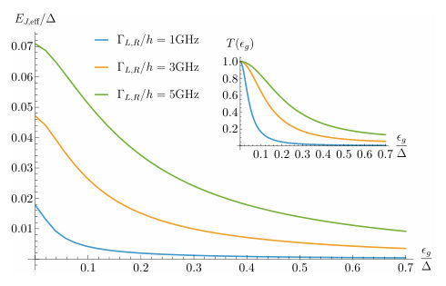
<figcaption class="paper-figure-caption"><b>Fig 1.</b> FIG. 1. Effective Josephson energy EJ,eff(T), due to EA(ϕ) and Econt(ϕ), and the transparency T(ϵg) as given by Eq. (4) (inset), as a function of ϵg, for ΓL = ΓR with T|ϵg=0 = 1. For asymmetric tunneling rates , δΓ ̸= 0, T(ϵg) is reduced by the factor 1 −δΓ2</figcaption>
</figure>
<figure class="paper-figure-card">
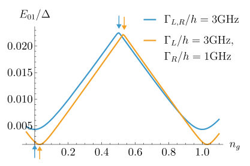
<figcaption class="paper-figure-caption"><b>Fig 2.</b> FIG. 2. Qubit energy oscillations, E01(ng), obtained by solv- ing the Schr¨odinger equation with the Hamiltonian Eq. (1) us- ing parameters ϵg = 0.6∆, ∆/h = 45 GHz, EC/h = 0.25 GHz. For symmetric tunneling reates (solid blue line), Γi/h = 3 GHz, i = L, R, the minima (maxima) of E01(ng) occurs at integer (half-integer) ng. For the asymmetric tunneling rates (solid orange line), ΓL/h = 3 GHz, ΓR/h = 1 GHz, the minima and maxima are shifted due to the presence of the additional charge offsets δng and nz from Eqs. (14) and (15), which is approximated by an effective charge offset, δneff.</figcaption>
</figure>
<figure class="paper-figure-card">
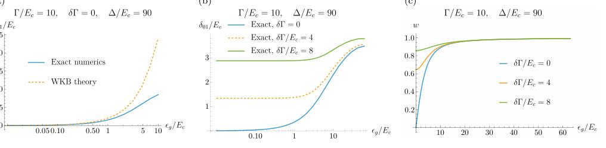
<figcaption class="paper-figure-caption"><b>Fig 3.</b> FIG. 3. Charge dispersion δ01(ϵg) in units of EC in (a,b), and probability amplitude w(ϵg) in (c), with Γ/EC = 10 and ∆/EC = 90. (a) For symmetric tunneling rates ΓL,R = 5EC, δ01 is calculated from the WKB theory(orange, dashed), Eq. (27), and from exact numerical solutions of the Schr¨odinger equation with ˆHeven (blue, solid). (b) For asymmetric tunneling rates, δΓ/EC = 0, 4, 8, δ01 is calculated from the exact numerical solutions with ˆHeven. Decreasing of transparency T(ϵg) either due to finite δΓ, or due to increasing of ϵg leads to growth of w and so is the charge dispersion. (c) Probability amplitude w of the lower Andreev branch for δΓ = 0 and for finite δΓ = 4, 8 EC. In the latter...</figcaption>
</figure>
<figure class="paper-figure-card">
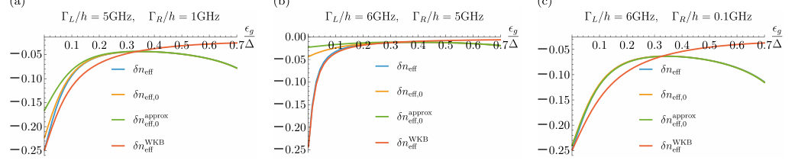
<figcaption class="paper-figure-caption"><b>Fig 4.</b> FIG. 4. The effective charge offset shift, δneff(ϵg), observed in the qubit energy oscillations, Fig. 2, and its interpretation. The exact numerics δneff(ϵg) (blue) is compared to the approximations δneff,0, Eq. (36) (orange) and a simplified expression δnapprox eff,0 , Eq. (37) (green) that assumes the system is “living on the lower Andreev branch”, expressed by the ansatz wavefunction, Eq. (34). In all three plots the WKB result δnWKB eff , Eq. (38), is given as the red curve: (a) For δΓ/h = 4 GHz, Γ/h = 6 GHz (moderate δΓ ≲Γ), the approximations practically coincide with the exact numerics for moderate ϵg ∈(0.1 ∆, 0.7 ∆). These approximations worsen for small ϵg ≪Γ, as the upper Andreev...</figcaption>
</figure>
<figure class="paper-figure-card">
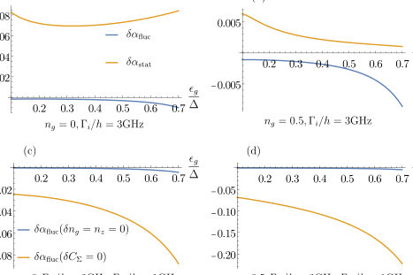
<figcaption class="paper-figure-caption"><b>Fig 5.</b> FIG. 5. (a),(b) Relative anharmonicity changes δαfluc(ϵg) and δαstat(ϵg) for symmetric tunnelings Γi/h = 3 GHz at ng = 0 and ng = 0.5. The effect of δCΣ on anharmonicity can be comparable to that of Econt. (c),(d) Plots for δαfluc(δCΣ = 0) and δαfluc(δng = nz = 0) for asymmetric tunnelings ΓL/h = 3 GHz, ΓR/h = 1 GHz. The effects of charge offsets are found to be up to two orders of magnitude stronger.</figcaption>
</figure>
<figure class="paper-figure-card">
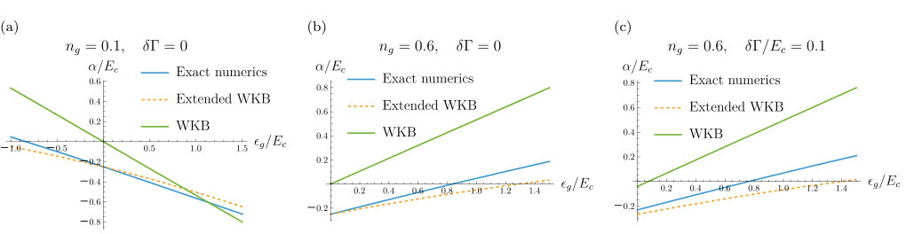
<figcaption class="paper-figure-caption"><b>Fig 6.</b> FIG. 6. Anharmonicity α(ϵg)/EC for small ϵg, |ϵg| ≲EC, in a non-transmon regime, EC ≲EJ,eff ≈0.5Γ (with Γ/EC = 16, ∆/EC = 360, δΓ ≪EC). Exact numerics (solid blue) is compared to the WKB theory, Eq. (40), (solid green), and to an extended WKB theory (dashed orange line), see Appendix A. The choices for ng = 0.1, 0.6, are to avoid trivial zeros of the WKB result. (a) α(ϵg)/EC for ng = 0.1, and symmetric tunnelings ΓL,R = 8 EC (i.e., T ≈1). The overall decrease of |α(ϵg)| as ϵg →0 as well as the slope of α(ϵg) are captured by the WKB result, as w(¯¯λ(ϵg)) →0, see Fig. 3(c) and Eq. (40). The non-zero intercept α(ϵg = 0) is reproduced in an extended WKB approach. (b) α(ϵg)/EC for ng = 0.6, and...</figcaption>
</figure>
<figure class="paper-figure-card">
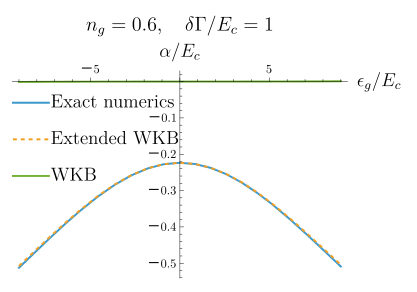
<figcaption class="paper-figure-caption"><b>Fig 7.</b> FIG. 7. Exact numeric anharmonicity α(ϵg)/EC for ng = 0.6, |ϵg| ≲EC, and ten times smaller EC as compared to Fig. 6(c), such that ∆/EC = 3600, Γ/EC = 160, and δΓ = EC, corresponding to T ≈1 and a true transmon regime (solid blue line). In this case the WKB result of Eq. (40) is ex- ponentially suppressed (horizontal green line), Eq. (A15), and the result is independent of ng. An extended WKB approach (dashed orange line), Appendix A, practically coincides with the exact numerics, in which α(ϵg) &lt; 0 and it never crosses zero line (scf. Eq. (10) of Ref. [8]). In particular, the in- tercept α(ϵg = 0)/EC approaches −1</figcaption>
</figure>
</div>

<p><strong>Main problem.</strong> Quantifying how gate-dependent offset charge shifts and capacitance renormalization impact the energy spectrum and anharmonicity of gatemon qubits in the weak tunneling regime.</p>
<p><strong>Main result.</strong> The study predicts that junction asymmetry induces new gate-voltage-dependent charge offsets and that capacitance renormalization significantly influences qubit anharmonicity, providing a protocol for experimental detection.</p>
<p><strong>Method.</strong> The authors use a many-body derived effective Hamiltonian and a WKB approach (including an extended WKB method) to solve the Schrödinger equation and analyze Andreev bound state dynamics.</p>
<p><strong>Summary.</strong> This paper investigates the impact of gate-dependent effects on the performance of gatemon qubits. By using a many-body treatment of S-QD-S junctions, the authors show that tunneling asymmetry leads to new, detectable charge offsets. They also demonstrate that capacitance renormalization plays a crucial role in determining qubit anharmonicity. These findings provide a theoretical framework for understanding and controlling the energy spectrum of gatemon-based quantum processors.</p>
<details>
<summary>Detailed structure</summary>
<p><strong>Model / system.</strong> A gatemon qubit consisting of a superconductor-quantum dot-superconductor (S-QD-S) junction in the weak tunneling regime, modeled via an effective Hamiltonian incorporating Andreev bound states and continuum energy shifts.</p>
<p><strong>Key observables.</strong> Qubit transition energy oscillations (E01), charge dispersion, qubit anharmonicity, and effective charge offset shifts.</p>
<p><strong>Important parameters / regimes.</strong> Gate voltage (epsilon_g), tunneling rates (Gamma), junction asymmetry (delta_Gamma), charging energy (EC), and superconducting gap (Delta).</p>
<p><strong>Assumptions / limitations.</strong> Weak tunneling regime, slow phase approximation, and the assumption that the even and odd parity sectors are well-separated.</p>
<p><strong>Figures summary.</strong> Figure 1 shows junction transparency vs. gate voltage; Figure 3 compares WKB theory to exact numerics for charge dispersion; Figure 5 compares relative contributions to anharmonicity; Figure 6 shows numerical anharmonicity vs. gate voltage.</p>
<p><strong>Paper structure.</strong> The paper introduces the physical problem of gatemon dynamics, presents a many-body derived effective Hamiltonian, applies WKB and numerical methods to study charge dispersion and offsets, analyzes anharmonicity drivers, and concludes with experimental implications.</p>
<p><strong>Why it may be interesting.</strong> This work is relevant for researchers in open quantum systems as it explores how the coupling to a continuum and quantum phase fluctuations lead to renormalization of fundamental qubit parameters like capacitance and charge offsets.</p>
</details>
<details>
<summary>Abstract</summary>
<p>Gatemon qubits are based on a superconductor-quantum dot-superconductor (S-QD-S) junction which enables in situ electrostatic tuning via a gate electrode. For a single-channel QD this structure gives rise to two subgap Andreev bound states (ABSs), and generally leads to a richer quantum phase dynamics as compared to conventional transmons. In a recent work [Phys. Rev. B 111, 214503 (2025)] we derived the quantum phase dynamics from a many-body treatment which leads to an effective gate voltage-dependent Hamiltonian that self-consistently incorporates the phase quantization. It predicts (i) a renormalization of the junction's effective capacitance and (ii) the presence of gate voltage and occupation-dependent charge offsets in junctions with tunneling asymmetry. Here, we quantify the observable impact of these effects on the qubit's energy spectrum and anharmonicity, by studying the interplay of the two Andreev branches as a function of dot-gate voltages and junction transparencies. We show the relation of these predictions to simplified gatemon models and propose a protocol to experimentally detect the predicted charge offsets.</p>
</details>
<p><sub><a href="#top">↑ back to top</a></sub></p>

<p><a id="paper-2604.24574"></a></p>
<h3 id="gauge-covariant-projected-entangled-paired-states-for-interacting-systems-in-a-magnetic-field"><a href="http://arxiv.org/abs/2604.24574v1">Gauge-covariant projected entangled paired states for interacting systems in a magnetic field</a></h3>
<p><strong>Authors:</strong> Wei Tang, Gunnar Möller, Frank Verstraete, Laurens Vanderstraeten<br>
<strong>Type:</strong> theory · <strong>Category:</strong> numerical methods · <strong>PDF:</strong> <a href="https://arxiv.org/pdf/2604.24574v1">https://arxiv.org/pdf/2604.24574v1</a><br>
<strong>Analysis basis:</strong> full PDF text, analyzed in chunks
<strong>Topic relevance:</strong> <code>entanglement &amp; information structure</code> <strong>2/5</strong></p>
<div class="figure-strip-hint">↔ Scroll figures horizontally</div>
<div class="paper-figures-scroll">
<figure class="paper-figure-card">
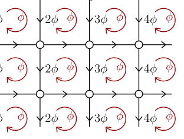
<figcaption class="paper-figure-caption"><b>Fig 1.</b> FIG. 1. Graphical representation of the Harper-Hofstadter- Hubbard Hamiltonian [Eq. (7)] with hopping strength t, on-site repulsion U and magnetic flux per plaquette ϕ = 2πa2B/Φ0. We have chosen the Landau gauge A = −Bx ey, leading to the indicated pattern of Peierls phases ϕij in the hopping terms −t(eiϕijb† ibj + h.c.). The arrows indicate the orientation of the line integral defining ϕij, while the labels ϕ, 2ϕ, 3ϕ, . . . specify the magnitude of the phase accumulated along that direction.</figcaption>
</figure>
<figure class="paper-figure-card">
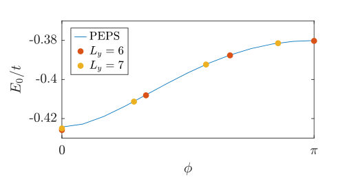
<figcaption class="paper-figure-caption"><b>Fig 2.</b> FIG. 2. Ground state energy per site of the bosonic Harper- Hofstadter-Hubbard model [Eq.(7)] at U/t = 20 and unit fill- ing as a function of the flux per plaquette ϕ, computed with our variational PEPS ansatz on the infinite plane, compared to MPS simulation on an infinite cylinder of width Ly = 6 and Ly = 7.</figcaption>
</figure>
</div>

<p><strong>Main problem.</strong> Simulating interacting many-body systems in a uniform magnetic field is difficult because the choice of gauge breaks standard translation symmetry, necessitating large, computationally expensive magnetic unit cells.</p>
<p><strong>Main result.</strong> The authors developed a gauge-covariant PEPS ansatz that uses virtual flux tensors to maintain translation invariance of physical observables, allowing for efficient simulations using a single unit cell regardless of the magnetic flux value.</p>
<p><strong>Method.</strong> A new Projected Entangled Pair State (PEPS) ansatz is constructed by imprinting virtual U(1) flux tensors onto the tensor bonds, optimized via a single-site boundary MPS algorithm and gradient-based variational optimization.</p>
<p><strong>Summary.</strong> This paper introduces a new tensor network method (PEPS) designed to simulate many-body systems in magnetic fields. By implementing magnetic flux at the virtual level of the tensors, the authors create an ansatz that is gauge-covariant and preserves translation symmetry in physical observables. This approach allows researchers to treat magnetic flux as a continuous parameter and avoids the need for large, extended unit cells. The method's accuracy is validated against established MPS simulations for the bosonic Harper-Hofstadter-Hubbard model.</p>
<details>
<summary>Detailed structure</summary>
<p><strong>Model / system.</strong> The study focuses on the bosonic Harper-Hofstadter-Hubbard model on a two-dimensional square lattice, featuring hopping strength t, on-site repulsion U, and a uniform magnetic flux per plaquette phi.</p>
<p><strong>Key observables.</strong> Ground state energy per site and physical expectation values.</p>
<p><strong>Important parameters / regimes.</strong> Hopping strength (t), interaction strength (U), magnetic flux per plaquette (phi), and particle filling (rho).</p>
<p><strong>Assumptions / limitations.</strong> The ansatz construction is motivated by the strong interaction (infinite-U) limit and first-order perturbation theory; the method is demonstrated for bosons but is applicable to fermions.</p>
<p><strong>Figures summary.</strong> Figure 1 illustrates the Peierls phase pattern in the Landau gauge; Figure 2 compares the ground state energy per site calculated with the proposed PEPS method against MPS results on cylinders.</p>
<p><strong>Paper structure.</strong> The paper introduces the problem of gauge-dependent symmetry breaking, proposes a gauge-covariant PEPS ansatz based on perturbative expansion, demonstrates the method's gauge independence and symmetry preservation, provides numerical benchmarks against MPS, and includes an appendix proving gauge covariance via flux tensor reconfiguration.</p>
<p><strong>Why it may be interesting.</strong> This provides a powerful new tool for simulating topological phases and fractional Chern insulators in lattice models without the computational bottleneck of large magnetic unit cells.</p>
</details>
<details>
<summary>Abstract</summary>
<p>The Hamiltonian for a system of itinerant particles on a two-dimensional lattice in a uniform magnetic field reduces the translational symmetry to a magnetic translation group, because of the need to choose a particular gauge for the vector potential. Nonetheless, in many situations all physical observables of the ground state remain entirely translation invariant. In this work, we introduce a projected entangled-pair state (PEPS) wavefunction with a pattern of virtual flux tensors, for which all physical expectation values are translation invariant by construction, possibly within an enlarged unit cell reflecting any symmetry breaking in the target state. Moreover, we show that the usual contraction and optimization methods for translation-invariant PEPS can be used, with the magnetic flux per plaquette only entering as a continuous parameter in the tensor network contractions. Therefore, our approach provides a method for simulating an interacting many-body system in a uniform magnetic field independently of the gauge choice for the vector potential and bypassing the need to consider extended magnetic unit cells.</p>
</details>
<p><sub><a href="#top">↑ back to top</a></sub></p>

<p><a id="paper-2604.23489"></a></p>
<h3 id="linear-equivalence-of-nonlinear-recurrent-neural-networks"><a href="http://arxiv.org/abs/2604.23489v1">Linear equivalence of nonlinear recurrent neural networks</a></h3>
<p><strong>Authors:</strong> David G. Clark<br>
<strong>Type:</strong> theory · <strong>Category:</strong> disordered systems and neural networks · <strong>PDF:</strong> <a href="https://arxiv.org/pdf/2604.23489v1">https://arxiv.org/pdf/2604.23489v1</a><br>
<strong>Analysis basis:</strong> full PDF text, analyzed in chunks
<strong>Topic relevance:</strong> <code>Keldysh / 2PI / non-Gaussian methods</code> <strong>2/5</strong></p>
<div class="figure-strip-hint">↔ Scroll figures horizontally</div>
<div class="paper-figures-scroll">
<figure class="paper-figure-card">
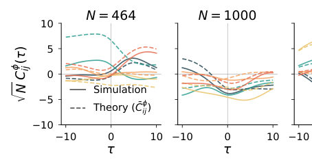
<figcaption class="paper-figure-caption"><b>Fig 1.</b> Figure 1: Time-lagged cross-covariances √</figcaption>
</figure>
<figure class="paper-figure-card">
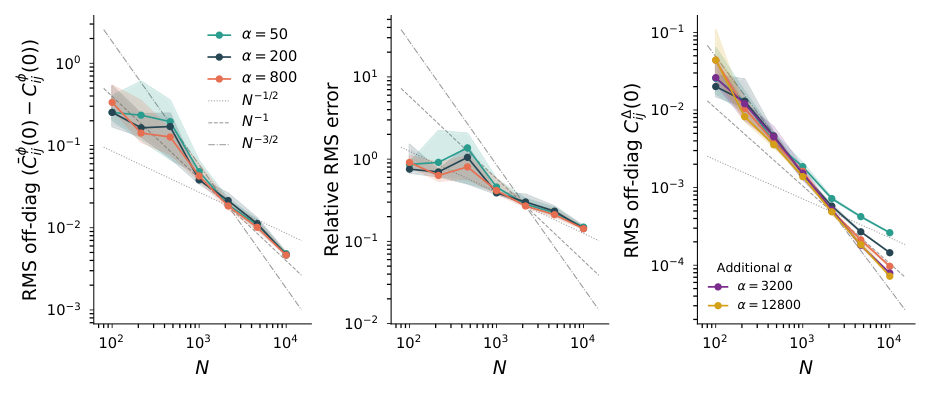
<figcaption class="paper-figure-caption"><b>Fig 2.</b> Figure 2: Scaling with network size 𝑁at 𝑔= 2.5, evaluated at 𝜏= 0. Lines show medians over 10 independent realizations of 𝑱; shaded regions indicate interquartile ranges. Colors correspond to sampling ratios 𝛼. Reference power laws 1 𝑁1/2 , 1 𝑁, and 1 𝑁3/2 are shown in gray.</figcaption>
</figure>
<figure class="paper-figure-card">
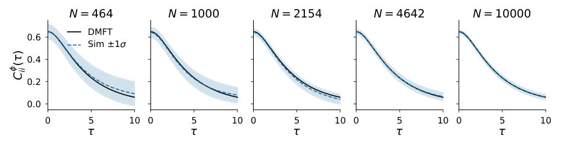
<figcaption class="paper-figure-caption"><b>Fig 3.</b> Figure 3: Autocovariance 𝐶𝜙 𝑖𝑖(𝜏) compared with the DMFT prediction 𝐶𝜙 ★(𝜏) (solid black) for a subset of network sizes at 𝑔= 2.5 and 𝛼= 800. Dashed lines show the empirical mean across the 𝐵= min(𝑁, 1000) diagonal elements; shaded regions indicate ±1 standard deviation. The</figcaption>
</figure>
</div>

<p><strong>Main problem.</strong> The paper seeks to analytically derive and verify the 'linear equivalence' ansatz, which posits that the full $N 	imes N$ covariance matrix of a large nonlinear recurrent neural network can be approximated by a linear network driven by independent noise.</p>
<p><strong>Main result.</strong> The author provides a rigorous derivation using the two-site cavity method, proving that the nonlinear covariance matrix matches the linear-equivalent form with controlled error scales of $O(1/N)$ for the error matrix and $O(1/\sqrt{N})$ for relative precision.</p>
<p><strong>Method.</strong> The study employs the two-site cavity method and Dynamical Mean Field Theory (DMFT), utilizing a linear-residual decomposition and a self-consistent matrix equation approach, supplemented by large-scale numerical simulations.</p>
<p><strong>Summary.</strong> This paper provides a formal analytical proof for the 'linear equivalence' of nonlinear recurrent neural networks. It demonstrates that the complex, high-dimensional covariance structure of a nonlinear system can be accurately captured by a simpler linear model with effective noise. By using the two-site cavity method, the author shows that the nonlinearities only affect the system through specific scalar order parameters. This result bridges the gap between the well-understood theory of linear random matrices and the more complex dynamics of nonlinear, chaotic networks.</p>
<details>
<summary>Detailed structure</summary>
<p><strong>Model / system.</strong> Large-scale nonlinear recurrent neural networks with $N$ units and random, quenched, i.i.d. asymmetric couplings $J_{ij}$. The dynamics follow a rate model (Sompolinsky et al.) with a nonlinear activation function such as $  anh$ or $   ext{erfen}$.</p>
<p><strong>Key observables.</strong> The $N 	imes N$ time-lagged covariance matrix $C_\phi(\omega)$, the response matrix $S_\phi(\omega)$, and scalar order parameters (single-site response and covariance).</p>
<p><strong>Important parameters / regimes.</strong> Network size $N$ (thermodynamic limit), coupling strength $g$ (specifically in the chaotic regime $g > 1/f'(0)$), and the sampling ratio $\alpha$.</p>
<p><strong>Assumptions / limitations.</strong> Assumes the large $N$ limit, i.i.d. quenched couplings, and that the network reaches a stationary state; it also assumes the absence of macroscopic collective modes in the reservoir.</p>
<p><strong>Figures summary.</strong> The notes mention Figure 1 shows time-lagged dynamics, and the paper includes numerical comparisons of covariance prediction errors and residual cross-covariances across different network sizes.</p>
<p><strong>Paper structure.</strong> The paper begins by establishing the problem of characterizing high-dimensional covariance; it reviews single-site DMFT; it presents two distinct cavity-based derivations (linear-residual decomposition and self-consistent matrix equation); it addresses the failure of naive Gaussian closure; it provides error scaling analysis; and concludes with numerical verification.</p>
</details>
<details>
<summary>Abstract</summary>
<p>Large nonlinear recurrent neural networks with random couplings generate high-dimensional, potentially chaotic activity whose structure is of interest in neuroscience, machine learning, ecology, and other fields. A fundamental object encoding the collective structure of this activity is the $N \times N$ covariance matrix. Prior analytical work on the covariance matrix has been limited to low-dimensional summary statistics, not the full high-dimensional object for a specific realization of the couplings. Recent work proposed an ansatz in which, at large $N$, the covariance matrix for a typical quenched realization takes the same form as that of a linear network with the same couplings, driven by independent noise, with mean-field order parameters setting the effective transfer function and the noise spectrum. Here, we derive this ansatz using the two-site cavity method, providing two distinct derivations that offer complementary perspectives. The first decomposes each unit's activity into a linear component and a nonlinear residual, and shows that cross-covariances between residuals at distinct sites are strongly suppressed, so that residuals act as independent noise within a linear network. The second writes a self-consistent matrix equation for the covariance matrix. A naive Gaussian closure for the joint statistics of activity at distinct sites gives the wrong equation; the cavity method separates Gaussian and non-Gaussian contributions, which enter at the same order, and produces the correct one. We verify the predictions numerically across a range of network sizes. These results extend linear equivalence from feedforward high-dimensional nonlinear systems, where the weights being analyzed are independent of their inputs, to recurrent networks, where the activities depend on the same couplings that generate them.</p>
</details>
<p><sub><a href="#top">↑ back to top</a></sub></p>

<p><a id="paper-2604.24337"></a></p>
<h3 id="new-non-euclidean-neural-quantum-states-from-additional-types-of-hyperbolic-recurrent-neural-networks"><a href="http://arxiv.org/abs/2604.24337v1">New non-Euclidean neural quantum states from additional types of hyperbolic recurrent neural networks</a></h3>
<p><strong>Authors:</strong> H. L. Dao<br>
<strong>Type:</strong> theory · <strong>Category:</strong> numerical methods · <strong>PDF:</strong> <a href="https://arxiv.org/pdf/2604.24337v1">https://arxiv.org/pdf/2604.24337v1</a><br>
<strong>Analysis basis:</strong> full PDF text, analyzed in chunks
<strong>Topic relevance:</strong> <code>entanglement &amp; information structure</code> <strong>2/5</strong></p>
<div class="figure-strip-hint">↔ Scroll figures horizontally</div>
<div class="paper-figures-scroll">
<figure class="paper-figure-card">
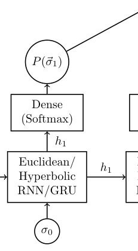
<figcaption class="paper-figure-caption"><b>Fig 1.</b> Figure 1: Schematic of the process of calculating the RNN wavefunction Ψ(⃗σ) = p</figcaption>
</figure>
<figure class="paper-figure-card">
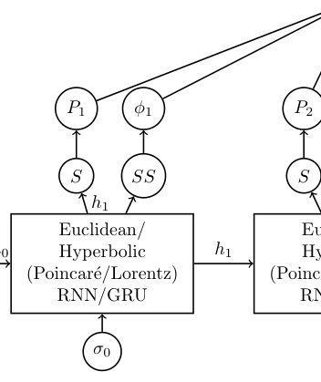
<figcaption class="paper-figure-caption"><b>Fig 2.</b> Figure 2: Schematic of the calculation of the RNN wavefunction Ψ(⃗σ) = P</figcaption>
</figure>
<figure class="paper-figure-card">
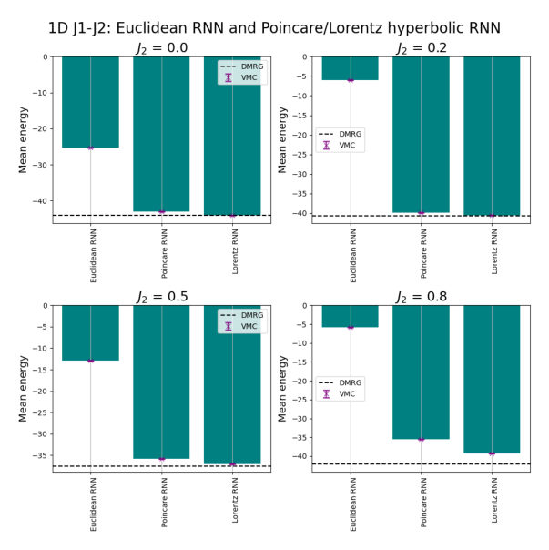
<figcaption class="paper-figure-caption"><b>Fig 3.</b> Figure 3: Comparisons of the performances of Euclidean RNN, Lorentz and Poincar´e hyperbolic RNN ansatzes listed in Table 1 for the 1D Heisenberg J1J2 model with J1 = 1.0 and different J2 couplings - clockwise from top: J2 = 0.0, 0.2, 0.8, 0.5. Each dot with error bar represents the mean E value of an NQS ansatz.</figcaption>
</figure>
<figure class="paper-figure-card">
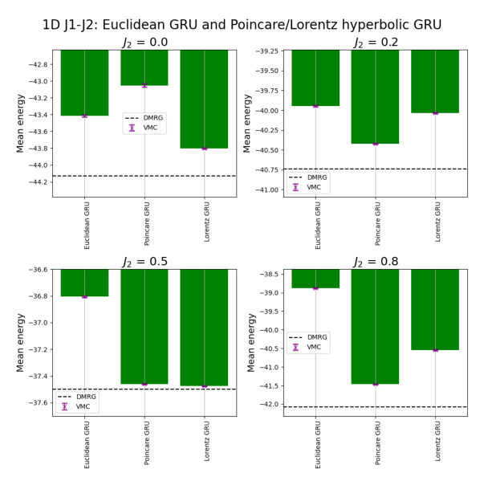
<figcaption class="paper-figure-caption"><b>Fig 4.</b> Figure 4: Comparisons of the performances of Euclidean GRU, Lorentz and Poincar´e hyperbolic GRU ansatzes listed in Table 1 for the 1D Heisenberg J1J2 model with J1 = 1.0 and different J2 couplings - clockwise from top: J2 = 0.0, 0.2, 0.8, 0.5. Each dot with error bar represents the mean E value of an NQS ansatz.</figcaption>
</figure>
<figure class="paper-figure-card">
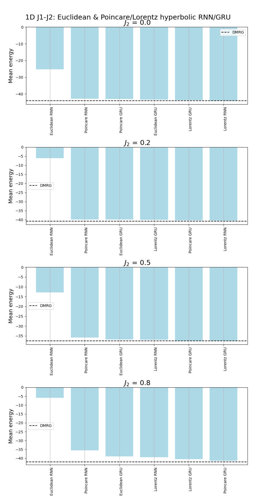
<figcaption class="paper-figure-caption"><b>Fig 5.</b> Figure 5: Comparisons of all six NQS ansatzes, sorted in an ascending performance order for the 1D Heisenberg J1J2 model with J1 = 1.0 and different J2 couplings - top to bottom: J2 = 0.0, 0.2, 0.5, 0.8. Note that all RNN variants have 5394 parameters, while all GRU variants have 15614 parameters.</figcaption>
</figure>
<figure class="paper-figure-card">
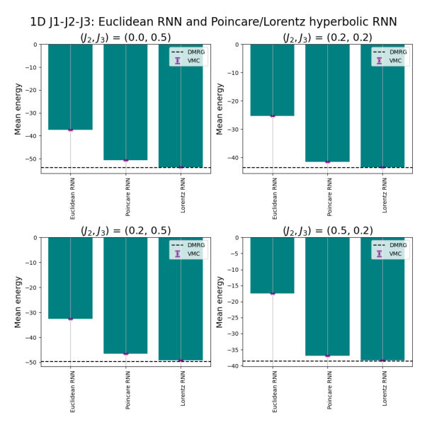
<figcaption class="paper-figure-caption"><b>Fig 6.</b> Figure 6: Comparisons of the performances of Euclidean RNN, Lorentz and Poincar´e hyperbolic RNN ansatzes listed in Table 4 for the 1D Heisenberg J1J2J3 model with J1 = 1.0 and different (J2, J3) couplings - clockwise from top: (0.0, 0.5),(0.2,0.2), (0.5,0.2), (0.2,0.5). All RNN variants have the same 6964 parameters. Each dot with error bar represents the mean E value of an NQS ansatz.</figcaption>
</figure>
<figure class="paper-figure-card">
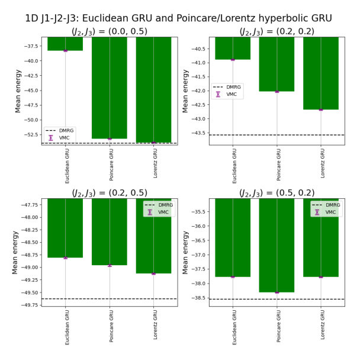
<figcaption class="paper-figure-caption"><b>Fig 7.</b> Figure 7: Comparisons of the performances of Euclidean GRU, Lorentz and Poincar´e hyperbolic GRU ansatzes listed in Table 4 for the 1D Heisenberg J1J2J3 model with J1 = 1.0 and different (J2, J3) couplings - clockwise from top: (0.0, 0.5),(0.2,0.2), (0.5,0.2), (0.2,0.5). All GRU variants have the same 15614 parameters. Each dot with error bar represents the mean E value of an NQS ansatz.</figcaption>
</figure>
<figure class="paper-figure-card">
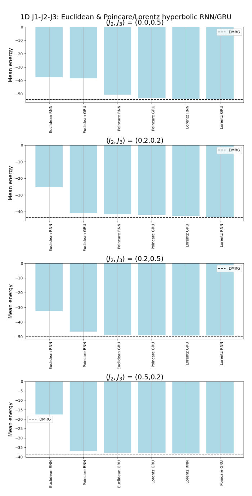
<figcaption class="paper-figure-caption"><b>Fig 8.</b> Figure 8: Comparisons of all NQS ansatzes, sorted in an ascending performance order for the 1D Heisenberg J1J2J3 model with J1 = 1.0 and different (J2, J3) couplings - top to bottom: (J2, J3) = (0.0, 0.5), (0.2, 0.2), (0.2, 0.5), (0.5, 0.2). Note that the RNN variants have 6964 parameters while the GRU variants have 15614 parameters.</figcaption>
</figure>
<figure class="paper-figure-card">
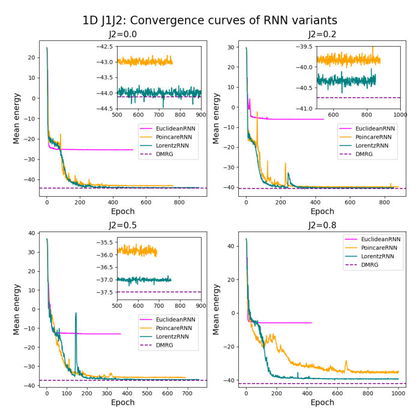
<figcaption class="paper-figure-caption"><b>Fig 9.</b> Figure 9: Training curves of RNN-variant NQS ansatzes for the 1D Heisenberg J1J2 model with J1 = 1.0 and different J2 couplings - clockwise J2 = 0.0, 0.2, 0.8, 0.5. The maximum number of epochs is fixed at 1000, but due to the early stopping mechanism that automatically terminated the training if no improvement was registered for the 200 epochs, the actual numbers of epochs run are different for different NQS ansatzes. Euclidean RNN always terminated first upon converging to a local mininum much higher than the true ground state. When present, the inset plot within each plot shows a magnified segment towards the end of the training when the models neared convergence. These inset plots are...</figcaption>
</figure>
<figure class="paper-figure-card">
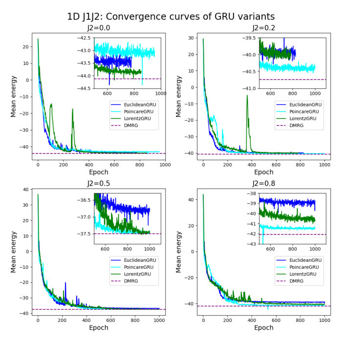
<figcaption class="paper-figure-caption"><b>Fig 10.</b> Figure 10: Training curves of GRU-variant NQS ansatzes for the 1D Heisenberg J1J2 model with J1 = 1.0 and different J2 couplings - clockwise J2 = 0.0, 0.2, 0.8, 0.5. The maximum number of epochs is fixed at 1000, but due to the early stopping mechanism that automatically terminated the training if no improvement was registered for the 200 epochs, the actual numbers of epochs run are different for different NQS ansatzes. When present, the inset plot within each plot shows a magnified segment towards the end of the training when the models neared convergence. These inset plots are only included when the curves are not sufficiently distinct in the main plots.</figcaption>
</figure>
</div>

<p><strong>Main problem.</strong> The study aims to extend non-Euclidean Neural Quantum States (NQS) by introducing new hyperbolic architectures, specifically Poincaré RNN, Lorentz RNN, Lorentz GRU, and Poincaré GRU, to better approximate quantum many-body ground states.</p>
<p><strong>Main result.</strong> All four new hyperbolic RNN/GRU variants consistently outperformed their Euclidean counterparts in 100-spin Heisenberg models, with the Lorentz RNN emerging as the most efficient and high-performing ansatz despite having significantly fewer parameters.</p>
<p><strong>Method.</strong> The researchers used Variational Monte Carlo (VMC) to train the neural network ansatzes and compared their ground state energy estimates against benchmarks from the Density Matrix Renormalization Group (DMRG) method.</p>
<p><strong>Summary.</strong> This paper introduces new hyperbolic neural network architectures (Poincaré and Lorentz RNN/GRU) for use as Neural Quantum States. By applying these to 1D Heisenberg spin chains, the author demonstrates that hyperbolic geometries significantly outperform standard Euclidean networks in approximating ground state energies. Notably, the Lorentz RNN achieves superior performance with much fewer parameters. The work also addresses critical numerical stability issues inherent in hyperbolic manifolds.</p>
<details>
<summary>Detailed structure</summary>
<p><strong>Model / system.</strong> The study focuses on 1D Heisenberg J1-J2 and J1-J2-J3 spin models with 100 spins, exploring various coupling regimes that introduce hierarchical structures and frustration.</p>
<p><strong>Key observables.</strong> Ground state energy, local energy, and probability distribution.</p>
<p><strong>Important parameters / regimes.</strong> Coupling constants J2 and J3; spatial constraints Rmax (for Poincaré) and Lmax (for Lorentz) used to prevent numerical instabilities.</p>
<p><strong>Assumptions / limitations.</strong> The study assumes the applicability of the Marshall sign for unfrustrated systems and focuses on 1D geometries; the optimal spatial constraints were determined via trial-and-error rather than exhaustive scanning.</p>
<p><strong>Figures summary.</strong> Figures illustrate the autoregressive calculation process for real and complex NQS, the impact of spatial constraints (Rmax and Lmax) on numerical stability, and training curves comparing energy convergence across different architectures.</p>
<p><strong>Paper structure.</strong> The paper introduces the mathematical framework for hyperbolic RNN/GRU architectures, details the VMC implementation for real and complex wavefunctions, presents benchmarking results against Euclidean models and DMRG, and discusses numerical stability and future directions.</p>
<p><strong>Why it may be interesting.</strong> This work is highly relevant for many-body dynamics and simulation as it demonstrates that non-Euclidean geometries can capture complex, hierarchical correlations in quantum systems more efficiently than standard Euclidean neural networks.</p>
</details>
<details>
<summary>Abstract</summary>
<p>In this work, we extend the class of previously introduced non-Euclidean neural quantum states (NQS) which consists only of Poincaré hyperbolic GRU, to new variants including Poincaré RNN as well as Lorentz RNN and Lorentz GRU. In addition to constructing and introducing the new non-Euclidean hyperbolic NQS ansatzes, we generalized the results of our earlier work regarding the definitive outperformances delivered by hyperbolic Poincaré GRU NQS ansatzes when benchmarked against their Euclidean counterparts in the Variational Monte Carlo (VMC) experiments involving the quantum many-body settings of the Heisenberg $J_1J_2$ and $J_1J_2J_3$ models, which exhibit hierarchical structures in the forms of the different degrees of nearest-neighbor interactions. Here, in particular, using larger systems consisting of 100 spins, we found that all four hyperbolic RNN/GRU NQS variants always outperformed their respective Euclidean counterparts. Specifically, for all $J_2$ and $(J_2,J_3)$ couplings considered, including $J_2=0.0$, Lorentz RNN NQS and Poincaré RNN NQS always outperformd Euclidean RNN NQS, while Lorentz/Poincaré GRU NQS always outperformed Euclidean GRU NQS, with a single exception when $J_2=0.0$ for Poincaré GRU NQS. Furthermore, among the four hyperbolic NQS ansatzes, depending on the specific $J_2$ or $(J_2, J_3)$ couplings, on four out of eight experiment settings, Lorentz GRU and Poincaré GRU took turns to be the top performing variant among all Euclidean and hyperbolic NQS ansatzes considered, while Lorentz RNN, with up to three times fewer parameters, was capable of not only surpassing the Euclidean GRU eight out of eight times but also outperforming both Lorentz GRU and Poincaré GRU four out of eight times, to emerge as the best overall hyperbolic NQS ansatz.</p>
</details>
<p><sub><a href="#top">↑ back to top</a></sub></p>

<p><a id="paper-2604.22960"></a></p>
<h3 id="no-cloning-with-unitary-scaling"><a href="http://arxiv.org/abs/2604.22960v1">No cloning with unitary scaling</a></h3>
<p><strong>Authors:</strong> Dafa Li<br>
<strong>Type:</strong> theory · <strong>Category:</strong> quantum information and computing · <strong>PDF:</strong> <a href="https://arxiv.org/pdf/2604.22960v1">https://arxiv.org/pdf/2604.22960v1</a><br>
<strong>Analysis basis:</strong> full PDF text, analyzed in chunks
<strong>Topic relevance:</strong> <code>entanglement &amp; information structure</code> <strong>2/5</strong></p>
<div class="figure-strip-hint">↔ Scroll figures horizontally</div>
<div class="paper-figures-scroll">
<figure class="paper-figure-card">
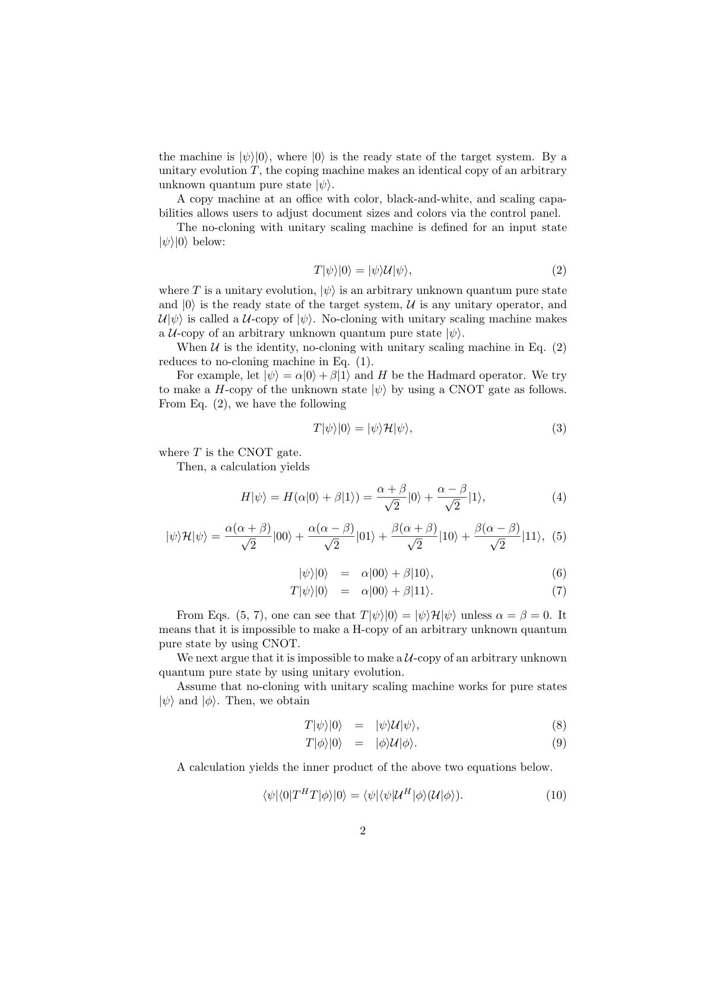
<figcaption class="paper-figure-caption"><b>Fig 1.</b> Low-resolution page preview, page 2</figcaption>
</figure>
<figure class="paper-figure-card">
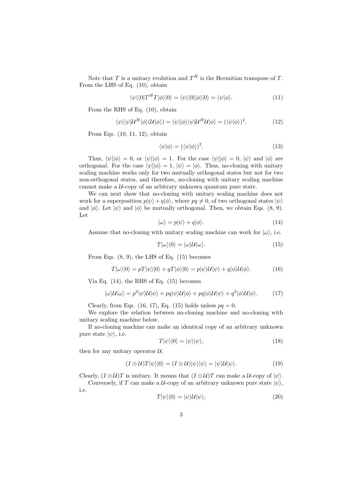
<figcaption class="paper-figure-caption"><b>Fig 2.</b> Low-resolution page preview, page 3</figcaption>
</figure>
<figure class="paper-figure-card">
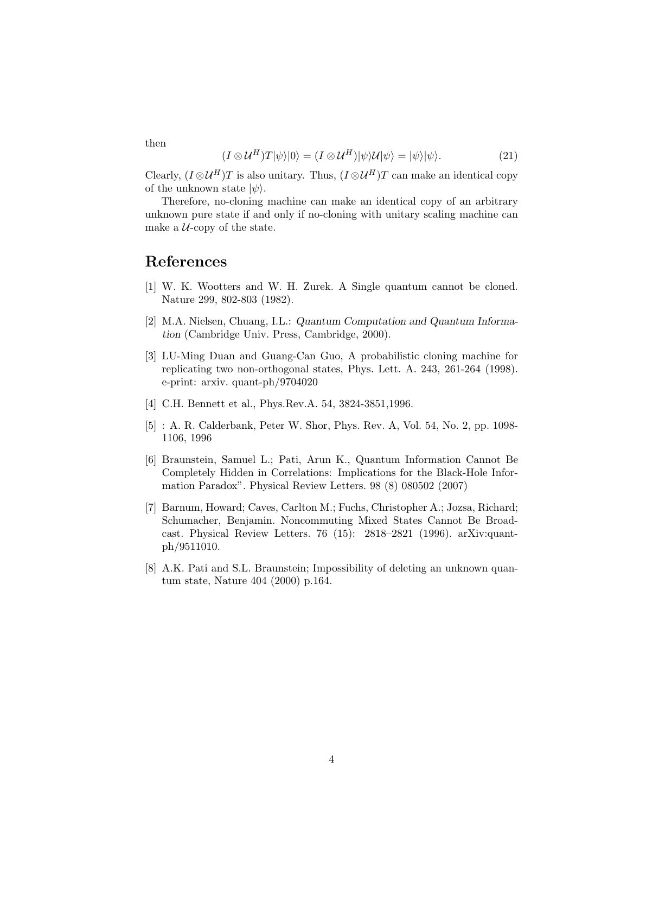
<figcaption class="paper-figure-caption"><b>Fig 3.</b> Low-resolution page preview, page 4</figcaption>
</figure>
</div>

<p><strong>Main problem.</strong> The paper investigates whether it is possible to create a 'U-copy' of an unknown quantum pure state, where the copy is the original state transformed by an arbitrary unitary operator U, using unitary evolution.</p>
<p><strong>Main result.</strong> The author proves a general no-cloning principle stating that it is impossible to create a U-copy of an arbitrary unknown pure state via unitary evolution, establishing that U-copying is only possible for identical or orthogonal states.</p>
<p><strong>Method.</strong> The proof utilizes the inner product method to compare the transformation of states under unitary evolution and employs linearity tests and counter-examples using CNOT gates.</p>
<p><strong>Summary.</strong> This paper proposes a generalization of the fundamental quantum no-cloning principle. Instead of looking at identical copies, it examines the possibility of creating copies that have been transformed by a unitary operator U. The author proves that such 'U-copying' is impossible for arbitrary unknown states, effectively showing that the constraints of the original no-cloning theorem extend to any unitary scaling of the state.</p>
<details>
<summary>Detailed structure</summary>
<p><strong>Model / system.</strong> The model involves an unknown quantum pure state |psi&gt; and a target system initially in a ready state |0&gt;, subjected to a unitary transformation T designed to produce the state |psi&gt;U|psi&gt;.</p>
<p><strong>Important parameters / regimes.</strong> The identity of the unitary operator U and the inner product between states |psi&gt; and |phi&gt;.</p>
<p><strong>Assumptions / limitations.</strong> The proof assumes that the copying process is governed by unitary evolution and focuses specifically on unknown pure states.</p>
<p><strong>Paper structure.</strong> The paper introduces the concept of U-copying, provides an analytical proof using inner products, demonstrates failure via a CNOT gate counter-example, performs a linearity test, and concludes with an equivalence theorem to standard cloning.</p>
</details>
<details>
<summary>Abstract</summary>
<p>It is known that the classical information like strings of bits can be copied. In 1982, Wootters and Zurek proposed the quantum no-cloning principle [1]. No-cloning principle says that it is impossible to make an identical copy of an arbitrary unknown quantum pure state by using unitary evolution. In this paper, we propose a general no-cloning principle. We call U|psi&gt;, where U is any unitary operator, a U-copy of the state |psi&gt;. The general no-cloning principle states that it is impossible to make a U-copy of an arbitrary unknown quantum pure state by using unitary evolution.</p>
</details>
<p><sub><a href="#top">↑ back to top</a></sub></p>

<p><a id="paper-2604.24422"></a></p>
<h3 id="noise-aware-selection-of-circuit-cutting-strategies-under-hardware-noise-non-uniformity"><a href="http://arxiv.org/abs/2604.24422v1">Noise-aware selection of circuit cutting strategies under hardware noise non-uniformity</a></h3>
<p><strong>Authors:</strong> Debarthi Pal, Ritajit Majumdar, Padmanabha Venkatagiri Seshadri, Anupama Ray, Yogesh Simmhan<br>
<strong>Type:</strong> both · <strong>Category:</strong> quantum information and computing · <strong>PDF:</strong> <a href="https://arxiv.org/pdf/2604.24422v1">https://arxiv.org/pdf/2604.24422v1</a><br>
<strong>Analysis basis:</strong> full PDF text, analyzed in chunks
<strong>Topic relevance:</strong> <code>QC/QI experiment</code> <strong>2/5</strong></p>
<div class="figure-strip-hint">↔ Scroll figures horizontally</div>
<div class="paper-figures-scroll">
<figure class="paper-figure-card">
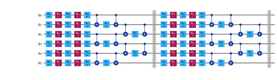
<figcaption class="paper-figure-caption"><b>Fig 1.</b> Figure 1. A 6-qubit 1D Ising model having nearest neighbour interactions with 2 trotter steps. The circuit execution overheads to partition this circuit for different device constraints are shown in Table I.</figcaption>
</figure>
<figure class="paper-figure-card">
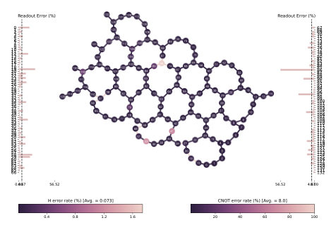
<figcaption class="paper-figure-caption"><b>Fig 2.</b> Figure 3. Noise profile of a 133 qubit IBM Quantum Heron device showing the non-uniformity of noise for both qubits and 2-qubit connectivity</figcaption>
</figure>
<figure class="paper-figure-card">
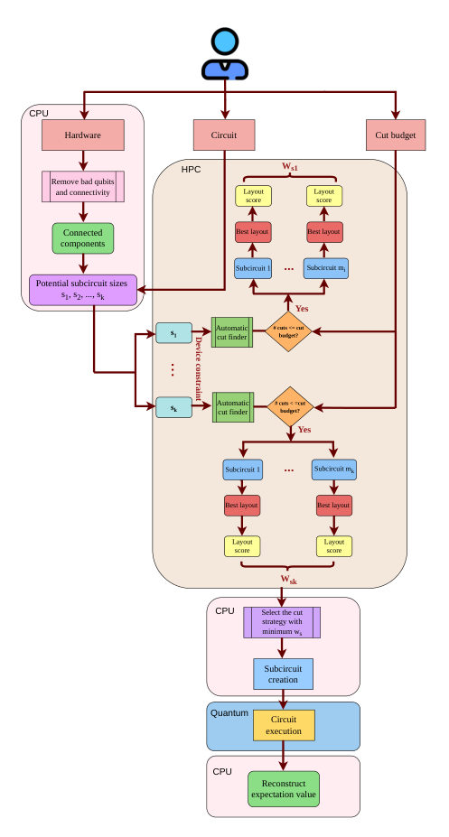
<figcaption class="paper-figure-caption"><b>Fig 3.</b> Figure 2. Workflow for HIC: the process involves pruning hardware based on qubit and connectivity noise profile, identifying connected components, and parallelizing the automatic cut finder across various potential subcircuit sizes to select the strategy with the minimum weighted layout score Ws. This figure explicitly demonstrates a quantum-centric algorithm to circuit cutting.</figcaption>
</figure>
<figure class="paper-figure-card">
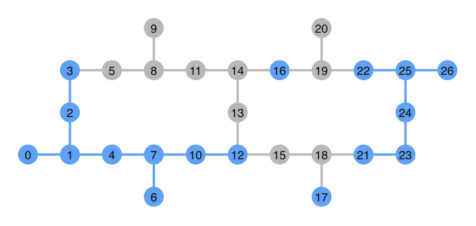
<figcaption class="paper-figure-caption"><b>Fig 4.</b> Figure 4. Punctured coupling map of a 27-qubit IBM Quantum device obtained after removing outlier qubits and connectivities from the hardware coupling map where z = 0.05. The blue and gray qubits (edges) respectively denote the ones retained and removed after puncturing. Dangling edges are naturally always removed irrespective of their error rate.</figcaption>
</figure>
<figure class="paper-figure-card">
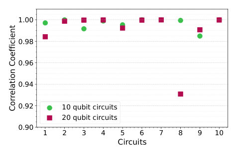
<figcaption class="paper-figure-caption"><b>Fig 5.</b> Figure 5. Correlation coefficient between norm-1 and norm-2 of the objective function W for random 10-qubit (green circles) and 20-qubit (red squares) circuits. The high correlation across most instances justifies the simplification of the objective function to focus exclusively on norm-1 metric.</figcaption>
</figure>
<figure class="paper-figure-card">
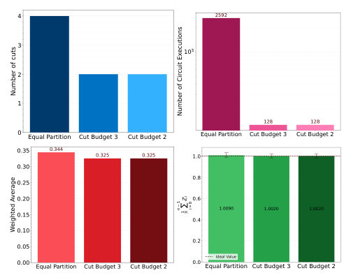
<figcaption class="paper-figure-caption"><b>Fig 6.</b> Figure 6. Comparison of equal partitioning and different cut-budget strategies (HIC) for a structured 20-qubit mirrored QAOA circuit (depth = 44). The figures respectively show the number of cuts, number of circuit executions, evaluation of the weighted average, and the calculated expectation value of the observable 1</figcaption>
</figure>
<figure class="paper-figure-card">
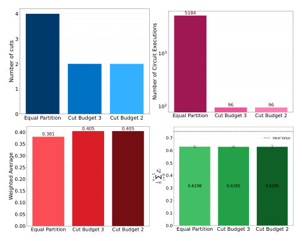
<figcaption class="paper-figure-caption"><b>Fig 7.</b> Figure 7. Comparison of equal partitioning and different cut-budget strategies (HIC) for a 20-qubit random Clifford circuit (depth = 128). The figures respectively show the number of cuts, number of circuit executions, evaluation of the weighted average, and the calculated expectation value of the observable 1 n Pn−1 i=0 Zi. HIC with different cut budgets significantly reduce the overhead of circuit execution, while having a slight increase in the weighted average score, and retaining the output quality.</figcaption>
</figure>
<figure class="paper-figure-card">

<figcaption class="paper-figure-caption"><b>Fig 8.</b> Figure 8. Comparison of equal partitioning and different cut-budget strategies (HIC) for a 20-qubit random Clifford circuit (depth = 51). The figures respectively show the number of cuts, number of circuit executions, evaluation of the weighted average, and the calculated expectation value of the observable 1 n Pn−1 i=0 Zi. HIC with cut budget 2 significantly reduce the overhead of circuit execution, while having a slight increase in the weighted average score, and retaining the output quality. However, HIC with cut budget 1 experiences a non-negligible increase in the weighted average score, and accordingly a degradation in output quality demonstrating that HIC cannot be used to...</figcaption>
</figure>
<figure class="paper-figure-card">
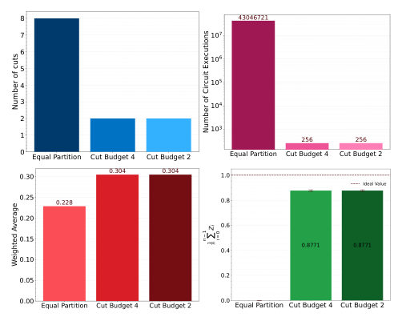
<figcaption class="paper-figure-caption"><b>Fig 9.</b> Figure 9. Comparison of equal partitioning and HIC strategies for a 50- qubit QAOA circuit (depth = 44). Equally partitioning the circuit leads to a substantial overhead in the number of circuit executions, making the reconstruction of the expectation value infeasible. With cut-budget 4, HIC identifies a 2-cut strategy. The number of circuit executions is significantly reduced, accompanied by an increase in the weighted average compared to the equal partitioning case. Reducing the cut budget to 2 resulted in the same strategy, as the cut budget of 4 itself suggested a 2-cut solution.</figcaption>
</figure>
<figure class="paper-figure-card">
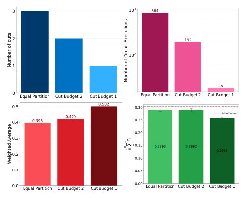
<figcaption class="paper-figure-caption"><b>Fig 10.</b> Fig. 9 reports results for a 50-qubit mirrored QAOA circuit. Under equal partitioning, the automatic cut finder identifies 8 cuts, resulting in 43, 046, 721 circuit executions. The weighted average layout score for equal partitioning is Ws = 0.228. In contrast, HIC identifies a valid 2-cut strategy, reducing the number of circuit executions to 256 and bringing circuit cutting into a tractable region. This reduction is accompanied by an increase in the weighted average to Ws = 0.304, causing an average deviation of 0.1229 from the ideal expectation value. Since such a 2-cut strategy exists, the same result was observed when the cut budget was taken to be 4 or 2. It is important to note that,...</figcaption>
</figure>
</div>

<p><strong>Main problem.</strong> Large quantum circuits often require execution across high-noise regions of hardware, and existing circuit cutting strategies lack systematic guidance on how to align cuts with non-uniform hardware noise to balance sampling overhead and fidelity.</p>
<p><strong>Main result.</strong> The proposed Hardware-Informed Circuit cutting (HIC) framework achieves 5-54x reductions in execution overhead for 20-qubit circuits and enables tractable cutting for 50-qubit circuits by exploiting spatial noise non-uniformity.</p>
<p><strong>Method.</strong> A three-stage workflow involving hardware 'puncturing' to remove noise outliers, identifying connected components to define subcircuit sizes, and using a weighted layout score to select optimal device constraints.</p>
<p><strong>Summary.</strong> This paper introduces a new framework called Hardware-Informed Circuit cutting (HIC) designed to optimize how large quantum circuits are decomposed into smaller subcircuits. By specifically accounting for the non-uniform noise patterns (islands of low noise) found in modern NISQ hardware, the method selects cutting strategies that avoid high-error regions. This approach significantly reduces the exponential sampling overhead typically associated with circuit cutting, making the execution of much larger circuits (up to 50 qubits) practically feasible on current hardware.</p>
<details>
<summary>Detailed structure</summary>
<p><strong>Model / system.</strong> The study focuses on NISQ hardware, specifically referencing IBM Quantum Heron and Torino architectures, and uses noisy simulations of 20-qubit and 50-qubit Clifford and QAOA circuits.</p>
<p><strong>Key observables.</strong> Weighted average layout score (Ws), expectation value of the Z-operator, and sampling overhead (number of circuit executions).</p>
<p><strong>Important parameters / regimes.</strong> Device constraint (maximum subcircuit size), cut budget (k_max), and Z-score for noise filtering.</p>
<p><strong>Assumptions / limitations.</strong> Assumes hardware noise profiles (calibration snapshots) are available and uses the weighted layout score as a proxy for noise exposure and output quality.</p>
<p><strong>Figures summary.</strong> Figure 1 shows the impact of device constraints on Ising model executions; Figure 2 outlines the HIC workflow; Figure 3 shows the IBM Heron noise profile; Figure 4 shows a punctured coupling map; Figure 5 shows correlation between objective function terms; Figure 6 compares partitioning strategies for QAOA; Figure 10 illustrates gate-cut necessity.</p>
<p><strong>Paper structure.</strong> The paper introduces the problem of noise non-uniformity, presents the HIC workflow (puncturing, enumeration, selection), validates the simplified objective function, demonstrates performance gains on 20-qubit and 50-qubit circuits, and compares the method against baselines like CutQC and FragQC.</p>
</details>
<details>
<summary>Abstract</summary>
<p>Noise in contemporary quantum hardware is highly non-uniform across qubits and couplers, giving rise to localized low-noise "islands" within otherwise noisy device topologies. As quantum workloads scale, executions are increasingly forced to traverse high-noise regions, degrading algorithmic fidelity. Circuit cutting provides a route to circumvent such regions by decomposing large circuits into smaller subcircuits, but its practicality is limited by exponential sampling overhead and the lack of systematic guidance on how cut strategies should align with heterogeneous hardware noise. In this work, we present a hardware-noise-aware circuit cutting framework that explicitly exploits the spatial non-uniformity of noise in quantum devices. Rather than proposing a new cut-finding algorithm, we formalize the problem of device-constraint selection under realistic hardware noise and show that this choice critically determines both execution overhead and effective noise. Using a unified gate- and wire-cutting formulation, we demonstrate that small, hardware-informed relaxations in the device constraint yield exponential reductions in execution overhead while preserving alignment with low-noise hardware regions. Across representative workloads, our method achieves an average reduction in the number of circuit executions ranging from 5-54x for 20-qubit circuits, and enables tractable circuit cutting for 50-qubit circuits and application-level benchmarks where conventional strategies incur prohibitive overhead. These results establish noise-aware device-constraint selection as a necessary ingredient for making circuit cutting resource-efficient and practically deployable on contemporary quantum hardware.</p>
</details>
<p><sub><a href="#top">↑ back to top</a></sub></p>

<p><a id="paper-2604.24755"></a></p>
<h3 id="non-abelian-particle-loop-fracton-and-planon-condensation-in-cage-net-models"><a href="http://arxiv.org/abs/2604.24755v1">Non-Abelian Particle-Loop, Fracton, and Planon Condensation in Cage-Net Models</a></h3>
<p><strong>Authors:</strong> Yifei Wang, Yu Zhao, Yingcheng Li, Hao Song, Yidun Wan<br>
<strong>Type:</strong> theory · <strong>Category:</strong> statistical mechanics · <strong>PDF:</strong> <a href="https://arxiv.org/pdf/2604.24755v1">https://arxiv.org/pdf/2604.24755v1</a><br>
<strong>Analysis basis:</strong> full PDF text, analyzed in chunks
<strong>Topic relevance:</strong> <code>entanglement &amp; information structure</code> <strong>2/5</strong></p>
<div class="figure-strip-hint">↔ Scroll figures horizontally</div>
<div class="paper-figures-scroll">
<figure class="paper-figure-card">
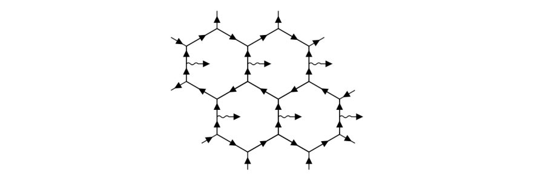
<figcaption class="paper-figure-caption"><b>Fig 1.</b> Figure 1: Part of the HGW model lattice. A tail (wavy line) is attached to an arbitrary edge of every plaquette.</figcaption>
</figure>
<figure class="paper-figure-card">
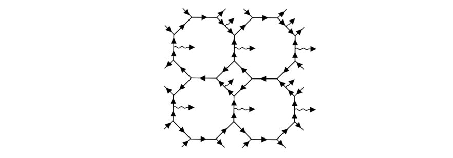
<figcaption class="paper-figure-caption"><b>Fig 2.</b> Figure 2: Configuration of the HGW model on the 2-dimensional truncated square lattice. The lattice geometry is constructed from trivalent vertices and features two distinct types of plaquettes: large octagonal plaquettes and smaller square (or diamond-like) plaquettes. A tail degree of freedom, depicted as a wavy line, is attached to every plaquette of both types and points inward, satisfying the requirements for the HGW formalism in this modified geometry.</figcaption>
</figure>
<figure class="paper-figure-card">
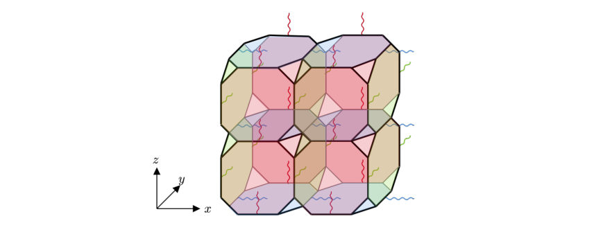
<figcaption class="paper-figure-caption"><b>Fig 3.</b> Figure 3: 3D truncated cubic lattice formed by intersecting three orthogonal stacks of 2D HGW layers. The layers are color-coded according to their orientation: green, red, and blue shading indicates layers normal to the x, y, and z directions, respectively. The lattice structure features principal edges which are formed at the intersection of two perpendicular layers and carry a pair of labels (jE, kE ∈F). A tail (wavy line) is specifically attached to each principal edge and directed into the adjacent octagonal plaquette. This configuration ensures that every octagonal plaquette possesses exactly one tail , essential for defining the dyonic sectors in the extended cage-net model.</figcaption>
</figure>
<figure class="paper-figure-card">
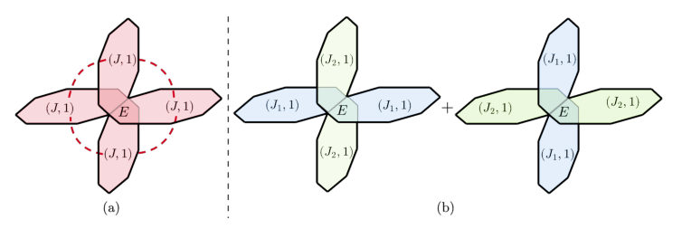
<figcaption class="paper-figure-caption"><b>Fig 4.</b> Figure 4: Graphical representation of the local terms comprising the p-loop condensa- tion projector PE acting on a principal edge E. (a) A J-loop generated by the operator W J EV J E , creating a loop of four J-chargeons around the principal edge. (b) A J1 −J2 — cross generated by the operator term W J1 E V J2 E + W J2 E V J1 E . This configuration represents a symmetric superposition of two states where chargeons J1 and J2 are exchanged across the intersecting planes, ensuring the projector preserves cubic symmetry.</figcaption>
</figure>
<figure class="paper-figure-card">

<figcaption class="paper-figure-caption"><b>Fig 5.</b> Figure 5: Illustration of certain p-loop configurations. The p-loop condensate is a super- position of various p-loop configurations fluctuating throughout the 3D lattice. Thick red loops represent the condensed p-loops formed along the principal edges, while the light red plaquettes indicate the underlying chargeon excitations that constitute these loops.</figcaption>
</figure>
<figure class="paper-figure-card">
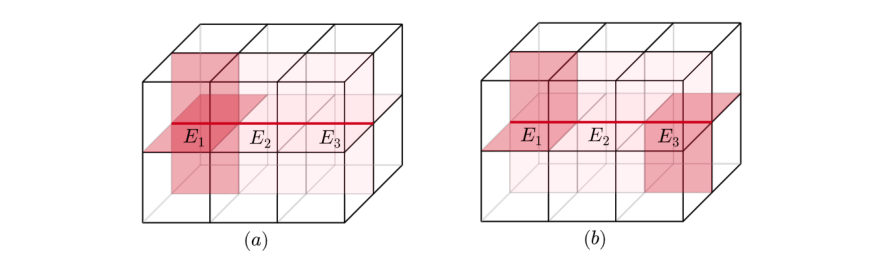
<figcaption class="paper-figure-caption"><b>Fig 6.</b> Figure 6: Restricted one-dimensional mobility of lineon. The thick red line denotes the strictly 1D linear subsystem along which the lineons are confined to move. Red plaquettes represent anyons carrying a ψ-flux, and the light red planes indicate the respective planes within which these ψ-fluxes reside. (a) A configuration where two lineons are localized on the principal edge E1. (b) The configuration after one of the lineons has hopped from edge E1 along the restricted 1D line to edge E3.</figcaption>
</figure>
</div>

<p><strong>Main problem.</strong> The paper addresses the lack of established Hamiltonian mechanisms for phase transitions between different non-trivial fracton orders and the difficulty of formulating condensation operators for non-Abelian anyons in 3D.</p>
<p><strong>Main result.</strong> The authors demonstrate a concrete mechanism for phase transitions between distinct fracton orders, specifically showing that condensing non-Abelian p-loops can map an extended Ising Cage-Net model to the X-cube model.</p>
<p><strong>Method.</strong> The study uses a framework of anyon and p-loop condensation applied to decoupled layers of the Hu-Geer-Wu (HGW) string-net model, employing algebraic tools like Unitary Fusion Categories and Hamiltonian engineering via condensation projectors.</p>
<p><strong>Summary.</strong> This paper presents a new framework for studying phase transitions between different fracton orders in 3+1 dimensions. By using the Hu-Geer-Wu string-net model as a parent, the authors show how condensing non-Abelian loops can drive transitions between complex phases like the extended Ising Cage-Net and the X-cube model. The work explicitly tracks how quasiparticles like planons split or become confined during these transitions. This establishes a generalizable method for analyzing the evolution of sub-dimensional excitations in higher-dimensional topological phases.</p>
<details>
<summary>Detailed structure</summary>
<p><strong>Model / system.</strong> The system consists of 3+1 dimensional cage-net models constructed from decoupled 2D HGW string-net layers, including the Extended Ising Cage-Net (ICN) model and the X-cube (XC) model on a truncated cubic lattice.</p>
<p><strong>Key observables.</strong> Quasiparticle spectra (fractons, lineons, and planons), anyon dynamics (splitting, identification, and confinement), and topological spin/braiding statistics.</p>
<p><strong>Important parameters / regimes.</strong> The infinite coupling limit of the condensation term (Lambda to infinity) and the specific fusion rules of the Ising Unitary Fusion Category.</p>
<p><strong>Assumptions / limitations.</strong> The framework focuses on the ICN model as a specific showcase; it also assumes that certain non-condensable fusion products (like fermions) limit the full condensation of non-Abelian p-loops.</p>
<p><strong>Figures summary.</strong> Figure 1 shows the HGW lattice with tails; Figure 2 shows the 2D truncated square lattice geometry; Figure 3 depicts the 3D truncated cubic lattice; Figure 4 illustrates the local components of the p-loop projector; Figure 5 shows the p-loop condensate configuration.</p>
<p><strong>Paper structure.</strong> The paper introduces the HGW model and its tail degrees of freedom, constructs the 3D extended cage-net models via p-loop condensation, derives the effective Hamiltonian for the ICN and X-cube models, and analyzes the resulting quasiparticle spectra and phase transition dynamics.</p>
<p><strong>Why it may be interesting.</strong> It provides a rigorous mathematical framework for understanding how complex, sub-dimensional excitations like fractons and planons emerge and evolve during topological phase transitions, which is fundamental to many-body dynamics.</p>
</details>
<details>
<summary>Abstract</summary>
<p>We present a framework for non-Abelian p-loop, fracton, and planon condensation in 3+1 dimensions by constructing extended cage-net fracton models using decoupled layers of the Hu-Geer-Wu (HGW) string-net model. These cage-net models extend the conventional cage-net models based on the Levin-Wen (LW) string-net model in the sense that they inherit the tail degrees of freedom of the HGW models, which are essential for completely describing the internal spaces of quasiparticles. This approach allows us to explicitly derive the quasiparticle spectra of the cage-net models by projecting those of the parent 2D HGW layers. Utilizing this framework, we can condense the p-loops formed by non-Abelian anyons within a fracton phase. Specifically, we construct the condensation projector for $(σ\barσ, 1)$-loops within the extended Ising Cage-Net (ICN) model. We demonstrate that condensing these non-Abelian loops drives a phase transition that maps the ICN model to the X-cube (XC) model defined on a truncated cubic lattice, a process that explicitly reveals the splitting of non-Abelian planons into distinct sub-dimensional excitations. Furthermore, our framework extends to the condensation of fractons and planons: we demonstrate that in the ICN model fracton condensation drives the decoupling of the 3D fracton order back into isolated 2D topological order layers, while planon condensation collapses the system entirely into a trivial phase. Our results establish a concrete Hamiltonian mechanism for phase transitions between distinct fracton orders and provide a generalizable method for analyzing the evolution of sub-dimensional excitations.</p>
</details>
<p><sub><a href="#top">↑ back to top</a></sub></p>

<p><a id="paper-2604.24633"></a></p>
<h3 id="optimization-using-locally-quantum-decoders"><a href="http://arxiv.org/abs/2604.24633v1">Optimization Using Locally-Quantum Decoders</a></h3>
<p><strong>Authors:</strong> Noah Shutty, Avijit Mandal, Seyoon Ragavan, Quentin Buzet, André Chailloux, Nicholas C. Rubin, Abid Khan, Sami Boulebnane, Ruslan Shaydulin, John Azariah, Stephen P. Jordan<br>
<strong>Type:</strong> theory · <strong>Category:</strong> quantum information and computing · <strong>PDF:</strong> <a href="https://arxiv.org/pdf/2604.24633v1">https://arxiv.org/pdf/2604.24633v1</a><br>
<strong>Analysis basis:</strong> full PDF text, analyzed in chunks
<strong>Topic relevance:</strong> <code>quantum measurements</code> <strong>2/5</strong></p>
<div class="figure-strip-hint">↔ Scroll figures horizontally</div>
<div class="paper-figures-scroll">
<figure class="paper-figure-card">
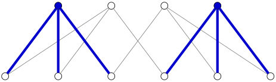
<figcaption class="paper-figure-caption"><b>Fig 1.</b> Figure 1: A Tanner graph from the (2, 3) Gallager ensemble. Highlighted in blue is a set of parity check nodes such that each bit node is connected by an edge to exactly one check from this set.</figcaption>
</figure>
</div>

<p><strong>Main problem.</strong> The paper aims to develop an efficient quantum decoding technique to solve the D-regular max-k-XORSAT optimization problem and investigate if it can achieve quantum advantage over classical algorithms.</p>
<p><strong>Main result.</strong> The authors develop a locally-quantum decoding technique that outperforms classical Belief Propagation and can surpass Prange's algorithm and simulated annealing for certain parameters, though they find a classical enhancement (Turbo Prange) that matches their performance.</p>
<p><strong>Method.</strong> The method uses Regev's reduction to map optimization to LDPC decoding and implements a code-dependent Fine-Grained Unambiguous Measurement (FGUM) strategy involving local basis changes on qubits.</p>
<p><strong>Summary.</strong> This paper introduces a new quantum decoding technique designed to solve combinatorial optimization problems like max-k-XORSAT. By tailoring measurements to the specific structure of LDPC codes, the authors achieve performance that beats standard classical algorithms like Belief Propagation and Simulated Annealing for certain problem instances. While the authors identify a classical heuristic that can match their results, the work demonstrates a promising direction for using quantum-enhanced decoding to tackle hard optimization tasks.</p>
<details>
<summary>Detailed structure</summary>
<p><strong>Model / system.</strong> The problem is modeled using D-regular max-k-XORSAT instances drawn from Gallager's ensemble, represented as bipartite Tanner graphs with bit-flip errors occurring in coherent superposition.</p>
<p><strong>Key observables.</strong> The fraction of satisfied constraints (optimization score) and the error rate/failure probability of the quantum decoder.</p>
<p><strong>Important parameters / regimes.</strong> The constraint arity (k), the variable degree (D), the bit-flip error rate (alpha), and the QAOA circuit depth (p).</p>
<p><strong>Assumptions / limitations.</strong> The analysis focuses on average-case instances from the Gallager ensemble and assumes a high-girth/tree-like graph structure in the large n limit.</p>
<p><strong>Figures summary.</strong> Figure 1 illustrates a Tanner graph structure; Table 1 compares optimization scores across different algorithms (Prange, Simulated Annealing, DQI+BP, Regev+FGUM).</p>
<p><strong>Paper structure.</strong> The paper identifies the limitations of previous quantum decoding approaches, proposes a new code-dependent FGUM technique, provides mathematical proofs for error bounds and statistical closeness, and concludes with a performance comparison against classical and quantum benchmarks.</p>
</details>
<details>
<summary>Abstract</summary>
<p>It was pointed out in [JSW+25] that widely-studied optimization problems such as D-regular max-k-XORSAT can be reduced to decoding of LDPC codes, using quantum algorithms related to Regev's reduction. LDPC codes have very good decoders, such as Belief Propagation (BP), and this therefore makes D-regular max-k-XORSAT an enticing target for this class of quantum algorithms. However, BP was found insufficient to achieve quantum advantage. Here, we develop an intrinsically quantum decoding technique, which decodes classical LDPC codes subject to coherent superpositions of bit flip errors. For average-case instances of D-regular max-k-XORSAT drawn from Gallager's ensemble, this quantum decoder strongly outperforms classical belief propagation at many values of k and D. For some (k,D) the approximate optima achievable using this decoder surpass both Prange's algorithm and simulated annealing. However, we stop short of achieving quantum advantage because we identify an enhancement to Prange's algorithm that recovers a precise tie, much as a precise tie was observed between the standard version of Prange's algorithm and a more limited version of locally-quantum decoding in [CT24].</p>
</details>
<p><sub><a href="#top">↑ back to top</a></sub></p>

<p><a id="paper-2604.23451"></a></p>
<h3 id="quantum-causal-discovery-via-amplitude-estimation-of-kullback-leibler-divergence"><a href="http://arxiv.org/abs/2604.23451v1">Quantum Causal Discovery via Amplitude Estimation of Kullback-Leibler Divergence</a></h3>
<p><strong>Authors:</strong> Shabnam Sodagari<br>
<strong>Type:</strong> both · <strong>Category:</strong> quantum information and computing · <strong>PDF:</strong> <a href="https://arxiv.org/pdf/2604.23451v1">https://arxiv.org/pdf/2604.23451v1</a><br>
<strong>Analysis basis:</strong> full PDF text, analyzed in chunks
<strong>Topic relevance:</strong> <code>entanglement &amp; information structure</code> <strong>2/5</strong></p>
<div class="figure-strip-hint">↔ Scroll figures horizontally</div>
<div class="paper-figures-scroll">
<figure class="paper-figure-card">
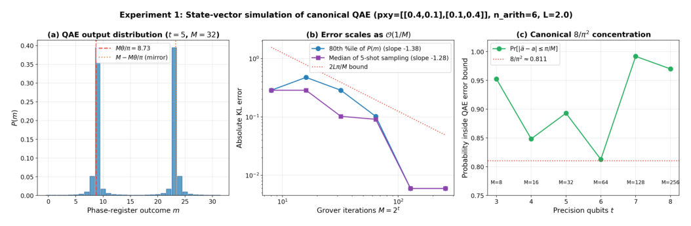
<figcaption class="paper-figure-caption"><b>Fig 1.</b> Fig. 1. Experiment 1: gate-level state-vector simulation of the QKLA circuit on the fixed target pxy = [[0.4, 0.1], [0.1, 0.4]], L = 2, narith = 6. (a) Phase-register output distribution at t = 5 (M = 2t = 32): two peaks at the canonical locations m⋆and M −m⋆, each carrying mass ≈0.395, sum ≈0.79 (above the 8/π2 ≈0.811 QAE guarantee only at worst-case phase alignment; here the phase is closer to that worst case so we land slightly below it). (b) 80th-percentile absolute KL error vs M, with the leading-order BHMT reference line 2Lπ/M (from |˜a −a| ≤π/M after rescaling by 2L). Log-log slope is −1.38 (least-squares fit), steeper than the −1 rate predicted by this leading-order bound; the 4Lπ/M...</figcaption>
</figure>
<figure class="paper-figure-card">
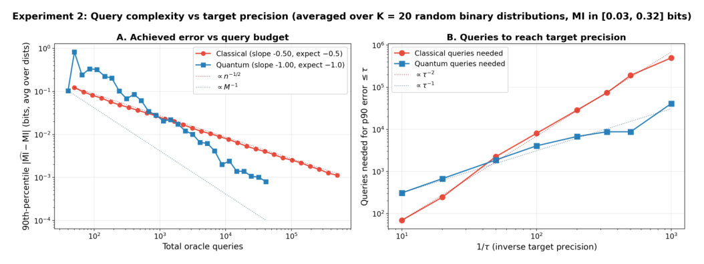
<figcaption class="paper-figure-caption"><b>Fig 2.</b> Fig. 2. Experiment 2: classical vs quantum query scaling, averaged across K = 20 random binary 2 × 2 joint distributions with MI in [0.03, 0.32] bits. (A) 90th-percentile error vs total oracle queries. Fitted slopes: classical −0.500 ± 0.004, quantum −1.001 ± 0.005. Dotted lines are the theoretical references ∝n−1/2 and ∝M−1. (B) Minimum queries needed for 90th-percentile error ≤τ, plotted against 1/τ. Classical tracks τ −2; quantum tracks τ −1. Crossover near 1/τ ≈40; at 1/τ = 200 the quantum algorithm needs 4.2× fewer queries.</figcaption>
</figure>
<figure class="paper-figure-card">
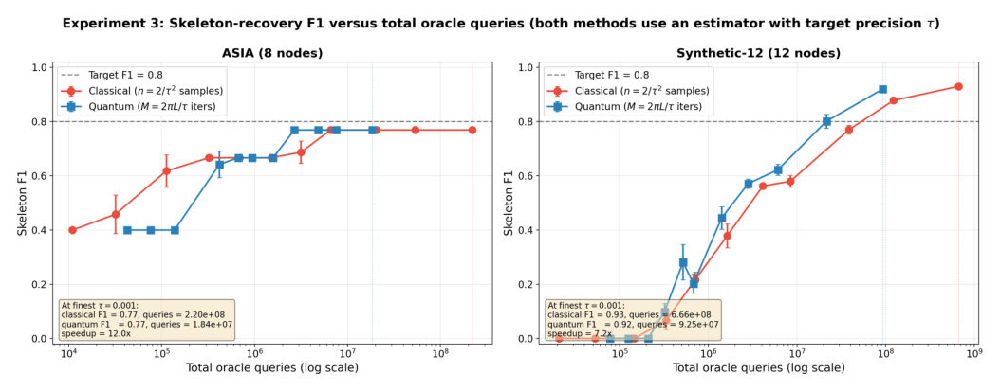
<figcaption class="paper-figure-caption"><b>Fig 3.</b> Fig. 3. Experiment 3: PC skeleton-recovery F1 versus total oracle queries on two benchmark networks. Classical PC uses the plug-in CMI estimator with n = ⌈2/τ 2⌉i.i.d. samples per test; quantum PC uses QCMIE with the empirically-sufficient M = ⌈2πL/τ⌉iterations per test (L = 3, nshots = 5), which is half the worst-case ⌈4πL/τ⌉of Theorem 6—justified by the measured slope −1.38 in Fig. 2(b). Error bars show ±1 s.d. over five trials. Dotted vertical lines mark the finest precision in the sweep (τ = 10−3); at that point, quantum needs 12.0× fewer queries on ASIA and 7.2× fewer on SYNTHETIC-12.</figcaption>
</figure>
</div>

<p><strong>Main problem.</strong> The computational bottleneck in constraint-based causal discovery is the high cost of conditional independence tests when high precision is required to detect weak dependencies.</p>
<p><strong>Main result.</strong> The authors present QKLA, a quantum algorithm that achieves a quadratic speedup in precision, reducing query complexity from O(1/tau^2) to O(1/tau) and significantly reducing total queries for the PC algorithm.</p>
<p><strong>Method.</strong> The QKLA algorithm uses Quantum Amplitude Estimation (QAE) to encode a clipped log-density ratio as a bounded amplitude, combined with Grover iterations and the inverse Quantum Fourier Transform.</p>
<p><strong>Summary.</strong> This paper introduces QKLA, a quantum algorithm designed to accelerate causal discovery by efficiently estimating Kullback-Leibler divergence. By leveraging Quantum Amplitude Estimation, the algorithm achieves a quadratic speedup in precision compared to classical sampling methods. Simulations and benchmarks on networks like ASIA and SYNTHETIC-12 demonstrate that the quantum approach can use significantly fewer oracle queries to achieve the same structural accuracy. This is particularly impactful in high-precision regimes where detecting weak dependencies is critical.</p>
<details>
<summary>Detailed structure</summary>
<p><strong>Model / system.</strong> The algorithm operates in a quantum oracle model involving a preparation oracle for joint distributions and a reversible arithmetic oracle for computing clipped log-density ratios.</p>
<p><strong>Key observables.</strong> Kullback-Leibler (KL) divergence, Conditional Mutual Information (CMI), and F1 score for network skeleton recovery.</p>
<p><strong>Important parameters / regimes.</strong> Target additive precision (tau), clip bound (L), failure probability (delta), and the high-precision regime where tau is small (10^-3 to 10^-2 bits).</p>
<p><strong>Assumptions / limitations.</strong> The efficiency assumes efficient quantum oracles for distribution preparation and log-ratio computation; the use of a clip bound L introduces a small bias on extreme distributions.</p>
<p><strong>Figures summary.</strong> Figure 1 shows the phase-register output distribution and error scaling on log-log plots; Figure 2 illustrates classical vs. quantum query scaling and identifies the crossover point for precision advantage.</p>
<p><strong>Paper structure.</strong> The paper introduces the causal discovery problem, presents the QKLA and QCMIE algorithms, provides a theoretical complexity analysis, validates the theory via gate-level simulations, and benchmarks performance on standard causal networks.</p>
</details>
<details>
<summary>Abstract</summary>
<p>Causal discovery from observational data underpins applications in finance, climate modeling, and machine learning. Constraint-based causal discovery reduces structure learning to a sequence of conditional independence (CI) tests, where each test decides independence by estimating conditional mutual information $I(X;Y \mid Z)$ to additive precision $τ$ and thresholding against it. Classically this requires $Θ(1/τ^{2})$ samples per test, a cost that dominates in the high-precision regime typical of weak dependencies. We present QKLA (Quantum Kullback--Leibler Amplitude estimation), a quantum algorithm that encodes a clipped log-density ratio as a bounded amplitude and applies amplitude estimation to recover the KL divergence. Given coherent oracle access to the joint distribution, QKLA achieves a quadratic precision improvement, needing only $\mathcal{O}((L/τ)\log(1/δ))$ queries, where $L$ is the log-ratio clip bound. Embedded in the PC algorithm, this compounds to an $\widetildeΩ(1/(Lτ))$ reduction in total queries for the full causal discovery procedure. We validate the theory in three experiments. A gate-level state-vector simulation of the full QKLA circuit confirms the predicted $\mathcal{O}(1/M)$ error decay. Across $K=20$ random binary distributions, classical and quantum error scalings match theory to slope accuracy $\pm 0.005$. On two benchmark networks (\textsc{Asia}, 8 nodes; \textsc{Synthetic-12}, 12 nodes), quantum PC matches classical skeleton-recovery F1 while using $2.5$--$3.0\times$ fewer oracle queries at $τ= 5\cdot 10^{-3}$ bits and up to $12\times$ fewer at $τ= 10^{-3}$ bits.</p>
</details>
<p><sub><a href="#top">↑ back to top</a></sub></p>

<p><a id="paper-2604.24597"></a></p>
<h3 id="quantum-kernel-advantage-over-classical-collapse-in-medical-foundation-model-embeddings"><a href="http://arxiv.org/abs/2604.24597v1">Quantum Kernel Advantage over Classical Collapse in Medical Foundation Model Embeddings</a></h3>
<p><strong>Authors:</strong> Sebastian Cajas Ordóñez, Felipe Ocampo Osorio, Dax Enshan Koh, Rafi Al Attrach, Aldo Marzullo, Ariel Guerra-Adames, J. Alejandro Andrade, Siong Thye Goh, Chi-Yu Chen, Rahul Gorijavolu, Xue Yang, Noah Dane Hebdon, Leo Anthony Celi<br>
<strong>Type:</strong> both · <strong>Category:</strong> quantum information and computing · <strong>PDF:</strong> <a href="https://arxiv.org/pdf/2604.24597v1">https://arxiv.org/pdf/2604.24597v1</a><br>
<strong>Analysis basis:</strong> full PDF text, analyzed in chunks
<strong>Topic relevance:</strong> <code>entanglement &amp; information structure</code> <strong>2/5</strong></p>
<div class="figure-strip-hint">↔ Scroll figures horizontally</div>
<div class="paper-figures-scroll">
<figure class="paper-figure-card">
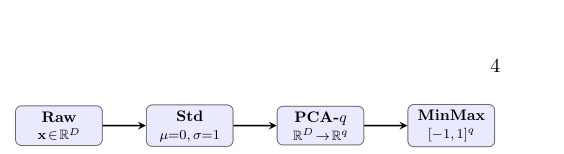
<figcaption class="paper-figure-caption"><b>Fig 1.</b> FIG. 1. Three-stage preprocessing pipeline applied to all embeddings. D ∈{448, 768} depending on the foundation model; q ∈{2, 3, 4, 5, 6, 8, 9, 10, 11, 12, 16} is the qubit/feature count.</figcaption>
</figure>
<figure class="paper-figure-card">
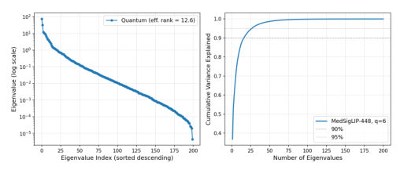
<figcaption class="paper-figure-caption"><b>Fig 2.</b> FIG. 2. Linear kernel KL eigenspectrum for MedSigLIP-448 at q = 6. The kernel has exactly 6 positive eigenvalues (effective rank 5.53) out of N = 1,896 training samples, which confirms that PCA-6 compression collapses the kernel matrix to a 6- dimensional subspace.</figcaption>
</figure>
<figure class="paper-figure-card">
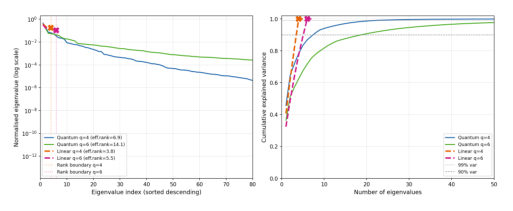
<figcaption class="paper-figure-caption"><b>Fig 3.</b> FIG. 3. Quantum vs. linear kernel eigenspectrum comparison for MedSigLIP-448 at q ∈{4, 6} (left: normalized eigenvalue decay; right: cumulative energy). The quantum kernel KQ has 1,133 (q=4) and 1,586 (q=6) eigenvalues exceeding numerical threshold ε=10−10; the theoretical upper bound for the fidelity kernel is 4q (256 and 4,096 for q = 4, 6), so the surplus above that bound consists of finite-precision numerical artefacts from statevector simulation. For comparison, the linear kernel has exactly 4 and 6 algebraically positive eigenvalues. The red vertical line marks the rank boundary of the linear kernel (Nλ&gt;0 = q), beyond which all linear kernel eigenvalues collapse to numerical zero; the...</figcaption>
</figure>
<figure class="paper-figure-card">
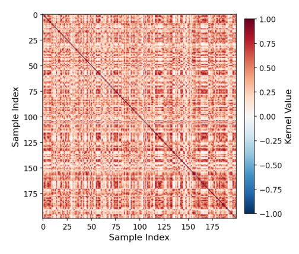
<figcaption class="paper-figure-caption"><b>Fig 4.</b> FIG. 4. Quantum kernel matrix KQ (trace-normalized) for MedSigLIP-448 at q = 6 (200 training samples sorted by class label). The off-diagonal block structure reflects class boundaries; the quantum feature map preserves discriminative signal in the same PCA subspace where the linear kernel collapses (Table VI).</figcaption>
</figure>
<figure class="paper-figure-card">
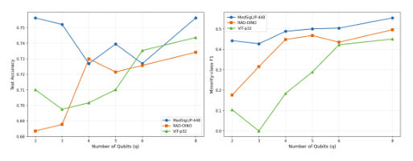
<figcaption class="paper-figure-caption"><b>Fig 5.</b> FIG. 5. Partial qubit sweep (q ∈{2, 3, 4, 5, 6, 8}, C = 1, DT9, seed 0): QSVM test accuracy (left) and minority-class F1 (right) for all three models. MedSigLIP-448 reaches F1 = 0.554 at q = 8; RAD-DINO and ViT-p32 improve monotonically across this range with ViT collapsing at q = 3 (F1 = 0). Full results at q ∈{9, 10, 11, 12, 16} are reported in Table II.</figcaption>
</figure>
<figure class="paper-figure-card">
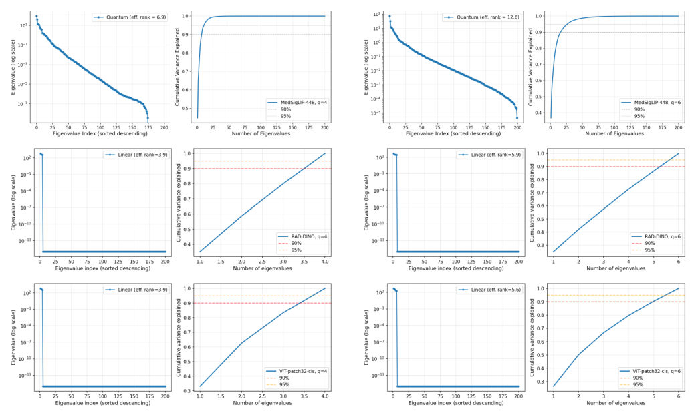
<figcaption class="paper-figure-caption"><b>Fig 6.</b> FIG. 6. Quantum kernel eigenvalue spectra for all three embedding models at q = 4 (left) and q = 6 (right). MedSigLIP-448 (top), RAD-DINO (middle), ViT-patch32-cls (bottom). The quantum kernel consistently exhibits higher effective rank than the linear kernel across all models and qubit counts.</figcaption>
</figure>
<figure class="paper-figure-card">
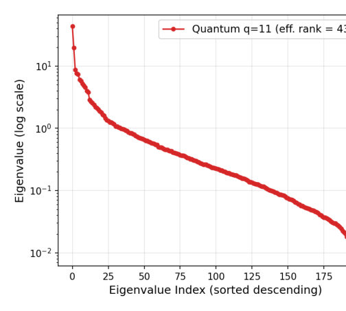
<figcaption class="paper-figure-caption"><b>Fig 7.</b> FIG. 7. Quantum kernel eigenspectrum for MedSigLIP-448 at the performance peak q = 11 (seed 0). Shannon effective rank = 43.04, a 6.3× increase from q = 4 (6.86); multi-seed mean is 69.80.</figcaption>
</figure>
<figure class="paper-figure-card">

<figcaption class="paper-figure-caption"><b>Fig 8.</b> FIG. 8. Quantum kernel heatmap for MedSigLIP-448 at q = 11, seed 0 (200 training samples). Compare with q = 6 (Figure 9): the q = 11 kernel shows richer off-diagonal structure, consistent with its higher effective rank (43.04 vs. 13.94, seed 0).</figcaption>
</figure>
<figure class="paper-figure-card">

<figcaption class="paper-figure-caption"><b>Fig 9.</b> FIG. 9. Quantum kernel heatmaps for all three embedding models at q = 4 (left) and q = 6 (right). The block structure reflects class boundaries in the training data (sorted by label). Higher qubit counts show sharper off-diagonal structure, consistent with increased effective rank.</figcaption>
</figure>
<figure class="paper-figure-card">

<figcaption class="paper-figure-caption"><b>Fig 10.</b> FIG. 10. PCA feature space (q = 4, left; q = 6, right) for all three models (MedSigLIP-448, RAD-DINO, ViT- patch32-cls, top to bottom). Each point is a training sample projected onto its first two PCA components after StandardScaler→PCA→MinMaxScaler preprocessing (seed 0). Blue: Medicaid/Medicare; orange: Private insurance. The two classes overlap substantially in every panel, which explains why the linear kernel KL—operating in this same q-dimensional subspace—collapses to majority-class prediction (F1 = 0). The label in the lower-left corner of each panel confirms classical SVM collapse at that configuration.</figcaption>
</figure>
</div>

<p><strong>Main problem.</strong> Investigating whether Quantum Support Vector Machines (QSVM) can overcome the 'classical kernel collapse' phenomenon, where classical kernels lose discriminative power when classifying high-dimensional medical image embeddings in low-dimensional PCA-reduced subspaces.</p>
<p><strong>Main result.</strong> QSVM demonstrates a significant advantage over both untuned linear SVMs and hyperparameter-tuned RBF SVMs, maintaining non-trivial minority-class F1 scores while classical kernels collapse to majority-class predictions. This advantage is attributed to the quantum kernel's higher effective rank and superior spectral structure.</p>
<p><strong>Method.</strong> A two-tier fair comparison framework using noiseless quantum simulations of QSVMs with 1-DOF angle encoding, compared against classical linear and RBF SVMs using PCA-reduced embeddings from medical foundation models.</p>
<p><strong>Summary.</strong> This paper explores the potential for quantum machine learning to outperform classical methods in medical imaging tasks. By using quantum kernels, the researchers found they could avoid the 'collapse' of predictive power that occurs when classical models are applied to highly compressed feature spaces. The study demonstrates that quantum kernels maintain a much higher effective rank, allowing for better classification of minority classes in imbalanced datasets. The results suggest that the structural complexity of the quantum Hilbert space provides a genuine advantage for processing complex medical embeddings.</p>
<details>
<summary>Detailed structure</summary>
<p><strong>Model / system.</strong> The study uses noiseless quantum simulations of quantum circuits (q qubits) processing high-dimensional embeddings from medical foundation models (MedSigLIP-448, RAD-DINO, and ViT-patch32) derived from MIMIC-CXR chest radiographs.</p>
<p><strong>Key observables.</strong> Minority-class F1 score, Shannon effective rank of the kernel matrix, kernel eigenspectrum, and AUC-ROC.</p>
<p><strong>Important parameters / regimes.</strong> Qubit count (q ranging from 2 to 16), regularization parameter (C), PCA dimensionality, and kernel normalization strategy (trace normalization).</p>
<p><strong>Assumptions / limitations.</strong> The study assumes noiseless quantum simulation (no hardware noise) and uses insurance type prediction as a proxy for the discriminative power of the embeddings.</p>
<p><strong>Figures summary.</strong> Figures illustrate the preprocessing pipeline, PCA projections showing class overlap, and comparative plots of effective rank and F1 scores across different qubit counts and models.</p>
<p><strong>Paper structure.</strong> The paper introduces the problem of classical kernel collapse, describes the medical imaging dataset and foundation models used, details the quantum and classical SVM methodologies, presents a comparative analysis across two tiers of complexity, provides a structural analysis of kernel rank and eigenspectra, and concludes with ablation studies on circuit design and architecture.</p>
</details>
<details>
<summary>Abstract</summary>
<p>We provide evidence of quantum kernel advantage under noiseless simulation in binary insurance classification on MIMIC-CXR chest radiographs using quantum support vector machines (QSVM) with frozen embeddings from three medical foundation models (MedSigLIP-448, RAD-DINO, ViT-patch32). We propose a two-tier fair comparison framework in which both classifiers receive identical PCA-q features. At Tier 1 (untuned QSVM vs. untuned linear SVM, C = 1 both sides), QSVM wins minority-class F1 in all 18 tested configurations (17 at p &lt; 0.001, 1 at p &lt; 0.01). The classical linear kernel collapses to majority-class prediction on 90-100% of seeds at every qubit count, while QSVM maintains non-trivial recall. At q = 11 (MedSigLIP-448 plateau center), QSVM achieves mean F1 = 0.343 vs. classical F1 = 0.050 (F1 gain = +0.293, p &lt; 0.001) without hyperparameter tuning. Under Tier 2 (untuned QSVM vs. C-tuned RBF SVM), QSVM wins all seven tested configurations (mean gain +0.068, max +0.112). Eigenspectrum analysis reveals quantum kernel effective rank reaches 69.80 at q = 11, far exceeding linear kernel rank, while classical collapse remains C-invariant. A full qubit sweep reveals architecture-dependent concentration onset across models. Code: https://github.com/sebasmos/qml-medimage</p>
</details>
<p><sub><a href="#top">↑ back to top</a></sub></p>

<p><a id="paper-2604.23007"></a></p>
<h3 id="qutrit-cliffordt-gates-by-two-body-angular-momentum-couplings-rotations-and-one-axis-twistings"><a href="http://arxiv.org/abs/2604.23007v1">Qutrit Clifford+T gates by two-body angular momentum couplings, rotations and one-axis-twistings</a></h3>
<p><strong>Authors:</strong> F. E. S. Steinhoff<br>
<strong>Type:</strong> theory · <strong>Category:</strong> quantum information and computing · <strong>PDF:</strong> <a href="https://arxiv.org/pdf/2604.23007v1">https://arxiv.org/pdf/2604.23007v1</a><br>
<strong>Analysis basis:</strong> full PDF text, analyzed in chunks
<strong>Topic relevance:</strong> <code>Tavis-Cummings &amp; cavity-many-emitter</code> <strong>2/5</strong></p>
<div class="figure-strip-hint">↔ Scroll figures horizontally</div>
<div class="paper-figures-scroll">
<figure class="paper-figure-card">

<figcaption class="paper-figure-caption"><b>Fig 1.</b> Figure 1.1: Interferometric diagram for the preparation of a qutrit angular momentum graph state |JGHZ⟩. The input state in each subsystem is the two-photon state |2, 0⟩.</figcaption>
</figure>
</div>

<p><strong>Main problem.</strong> Developing a physical implementation and representation for the qutrit (d=3) Clifford+T gate set using low-order angular momentum couplings and bosonic modes.</p>
<p><strong>Main result.</strong> The full qutrit Clifford+T set can be realized using only two-body angular momentum couplings, rotations, and one-axis-twisting operations, with an improved bosonic mode requirement of only two modes per subsystem.</p>
<p><strong>Method.</strong> The authors use an angular momentum representation (j=1) and the Jordan-Schwinger map to translate gates into bosonic mode operations, decomposing gates into sequences of rotations, one-axis-twisting, and Kerr nonlinearities.</p>
<p><strong>Summary.</strong> This paper presents a theoretical framework for implementing the complete Clifford+T gate set for qutrits. It shows that these gates can be constructed using only two-body angular momentum couplings, rotations, and one-axis-twisting. The authors also provide an efficient mapping to bosonic systems, reducing the required number of modes per subsystem. Finally, the work demonstrates how these gates can be used to deterministically prepare complex entangled and graph states.</p>
<details>
<summary>Detailed structure</summary>
<p><strong>Model / system.</strong> The study considers spin-1 (j=1) angular momentum systems and two-mode bosonic systems (e.g., optical interferometers, BECs, or circuit QED) utilizing self-Kerr and cross-Kerr interactions.</p>
<p><strong>Important parameters / regimes.</strong> The magic angle alpha = tan^-1(sqrt(2)) for the Theta_z operator, and the edge weights phi_e for angular momentum graph states.</p>
<p><strong>Assumptions / limitations.</strong> The analysis assumes an idealized, lossless scenario and uses h-bar = 1 for simplicity.</p>
<p><strong>Figures summary.</strong> An interferometric diagram illustrating the preparation of a qutrit angular momentum graph state using two-photon states as input.</p>
<p><strong>Paper structure.</strong> The paper introduces an angular momentum representation for qutrit gates, demonstrates the decomposition of the Clifford+T set into rotations and one-axis-twisting, maps these to bosonic modes via the Jordan-Schwinger map, and concludes with applications to entanglement and graph state preparation.</p>
<p><strong>Why it may be interesting.</strong> This work provides a practical blueprint for scaling quantum computing from qubits to qutrits using standard nonlinear interactions like Kerr nonlinearities, which is highly relevant for quantum optics and circuit QED.</p>
</details>
<details>
<summary>Abstract</summary>
<p>We develop an angular momentum representation and implementation of the Clifford+T set of unitaries for qutrits. We show that local gates from this set can be realized by the sole use of suitable rotations and one-axis-twisting operations, which are at most quadratic in the angular momentum operators and thus can be experimentally realized in many quantum systems. Controlled rotations are shown to only require linear angular momentum couplings and, as a consequence, the full qutrit Clifford+T set is shown to be expressed solely in terms of two-body angular momentum couplings, rotations and one-axis-twisting operations. By employing the Jordan-Schwinger map, we show an analogous implementation in terms of bosonic modes, improving on the number of modes with regard to a previous scheme. Moreover, we employ the cross-Kerr interaction in order to obtain any qutrit Clifford+T gate for bosonic modes. We illustrate our findings with simple schemes for preparing entangled states of interest.</p>
</details>
<p><sub><a href="#top">↑ back to top</a></sub></p>

<p><a id="paper-2604.23869"></a></p>
<h3 id="representability-for-quantum-theory-beyond-particle-number-conservation"><a href="http://arxiv.org/abs/2604.23869v1">Representability for Quantum Theory beyond Particle-Number Conservation</a></h3>
<p><strong>Authors:</strong> David A. Mazziotti<br>
<strong>Type:</strong> theory · <strong>Category:</strong> numerical methods · <strong>PDF:</strong> <a href="https://arxiv.org/pdf/2604.23869v1">https://arxiv.org/pdf/2604.23869v1</a><br>
<strong>Analysis basis:</strong> full PDF text, analyzed in chunks
<strong>Topic relevance:</strong> <code>Keldysh / 2PI / non-Gaussian methods</code> <strong>2/5</strong></p>
<div class="figure-strip-hint">↔ Scroll figures horizontally</div>
<div class="paper-figures-scroll">
<figure class="paper-figure-card">

<figcaption class="paper-figure-caption"><b>Fig 1.</b> FIG. 1. (a) Ground-state energy and (b) base-10 energy error relative to FCI of the six-orbital pairing ring Hamiltonian from V2RDM with (2,2)-positivity, partial (2,3)-positivity, and full (2,3)-positivity.</figcaption>
</figure>
<figure class="paper-figure-card">

<figcaption class="paper-figure-caption"><b>Fig 2.</b> FIG. 2. Particle-number variance of the ground state of the pairing ring Hamiltonian from V2RDM with (2,2)-positivity, partial (2,3)-positivity, and full (2,3)-positivity, compared with FCI.</figcaption>
</figure>
<figure class="paper-figure-card">

<figcaption class="paper-figure-caption"><b>Fig 3.</b> Figure 2 shows the particle-number variance as a func- tion of κ/τ from V2RDM with (2, 2)-positivity, par- tial (2, 3)-positivity, and full (2, 3)-positivity, along with FCI. The nonzero variance demonstrates that the ground state of the ring Hamiltonian is number non-conserving. The variance from (2, 2)-positivity becomes too large for κ/τ ≳0.5, while the variance from full (2, 3)-positivity is indistinguishable from FCI for all κ/τ. As in the en- ergy comparison, the partial (2, 3)-positivity results fol- low FCI near equilibrium but depart from the exact re- sults for κ/τ ≈0.5–1.2. We next consider the dissociation of linear H4 with all adjacent H–H bonds stretched equally. Figure 3(a)</figcaption>
</figure>
<figure class="paper-figure-card">

<figcaption class="paper-figure-caption"><b>Fig 4.</b> FIG. 3. (a) Potential energy curve and (b) base-10 energy error relative to FCI for the symmetric dissociation of linear H4 from Hartree–Fock, MP2, CCSD(T), and V2RDM with (2,2)- as well as partial and full (2,3)-positivity.</figcaption>
</figure>
</div>

<p><strong>Main problem.</strong> The N-representability problem for quantum systems where particle number is not conserved, specifically determining when a 2-RDM corresponds to a physical state in Fock space.</p>
<p><strong>Main result.</strong> The development of a systematic hierarchy of (2, p)-positivity conditions that provides a unified framework for both particle-number-conserving and non-conserving systems, with (2, 3)-positivity showing extremely high accuracy.</p>
<p><strong>Method.</strong> Variational 2-RDM (V2RDM) method using Semidefinite Programming (SDP) and a dual-cone approach to characterize the intersection of the positive cone with the two-body operator space.</p>
<p><strong>Summary.</strong> This paper solves the 2-RDM representability problem for quantum systems where particle number is not conserved. By using a polar cone approach, the authors derive a hierarchy of constraints that work for both fixed and fluctuating particle numbers. The (2, 3)-positivity conditions are shown to be highly accurate, even in complex cases like the H4 molecule. This provides a powerful tool for simulating many-body physics without needing the full wave function.</p>
<details>
<summary>Detailed structure</summary>
<p><strong>Model / system.</strong> The study utilizes a fermionic ring Hamiltonian (a generalization of the BCS Hamiltonian) and the linear H4 molecule to demonstrate the method's applicability to both non-conserving and conserving regimes.</p>
<p><strong>Key observables.</strong> Ground-state energy, energy error relative to Full Configuration Interaction (FCI), and particle-number variance.</p>
<p><strong>Important parameters / regimes.</strong> The interaction parameter kappa/tau in the ring model and the particle-number variance constraint.</p>
<p><strong>Assumptions / limitations.</strong> The general N-representability problem is QMA-complete, implying that the full solution has exponential worst-case scaling; the method relies on the (2, p)-positivity hierarchy approximation.</p>
<p><strong>Figures summary.</strong> Figure 1 compares ground-state energies and logarithmic errors for various positivity levels in the ring model; Figure 2 shows particle-number variance; Figure 3 shows potential energy curves and energy errors for the H4 molecule dissociation.</p>
<p><strong>Paper structure.</strong> The paper introduces the representability problem for non-conserving systems, presents the mathematical derivation of the (2, p)-positivity hierarchy via the polar cone, demonstrates the unified framework using a fermionic ring model, and validates the accuracy using the H4 molecular dissociation.</p>
<p><strong>Why it may be interesting.</strong> It provides a new computational framework for studying many-body systems where particle number fluctuates, such as superconducting or superfluid systems, using reduced density matrix methods.</p>
</details>
<details>
<summary>Abstract</summary>
<p>Representability determines when a two-particle reduced density matrix (2-RDM) corresponds to a physical quantum state, enabling many-particle quantum calculations with 2-RDMs rather than the wave function. In this Letter, we present a solution of the representability problem for quantum systems without particle-number conservation. The physically allowed set of 2-RDMs can be characterized from a geometrically `orthogonal' set, the polar cone. We derive explicit linear equations for the two-body operators in the polar cone -- the intersection of the $p$-positive cone with the two-body operator space -- to obtain a systematic hierarchy of representability conditions that do not depend on higher RDMs or the wave function. Moreover, by augmenting these conditions with the particle-number variance, we obtain a unified framework for treating both particle-number-conserving and nonconserving systems. We illustrate with a spin system and molecular H$_4$.</p>
</details>
<p><sub><a href="#top">↑ back to top</a></sub></p>

<p><a id="paper-2604.23835"></a></p>
<h3 id="squeezed-state-degradations-due-to-mode-mismatch-and-thermal-aberrations-in-gravitational-wave-detectors"><a href="http://arxiv.org/abs/2604.23835v1">Squeezed state degradations due to mode mismatch and thermal aberrations in gravitational wave detectors</a></h3>
<p><strong>Authors:</strong> Kevin Kuns, Daniel Brown<br>
<strong>Type:</strong> theory · <strong>Category:</strong> other · <strong>PDF:</strong> <a href="https://arxiv.org/pdf/2604.23835v1">https://arxiv.org/pdf/2604.23835v1</a><br>
<strong>Analysis basis:</strong> full PDF text, analyzed in chunks
<strong>Topic relevance:</strong> <code>interference shaping light</code> <strong>2/5</strong></p>
<div class="figure-strip-hint">↔ Scroll figures horizontally</div>
<div class="paper-figures-scroll">
<figure class="paper-figure-card">

<figcaption class="paper-figure-caption"><b>Fig 1.</b> Figure 1. Coupled cavity equivalent to the differential arm motion of a gravitational wave detector. The ellipses and circles represent (potentially squeezed) quantum vacuum of the electromagnetic field at several locations. The 0 modes represent the fundamental vacuum and the 1 and subsequent modes represent the HOM vacuum. Several nodes of the system are marked with the µi labels. The squeezed states are injected at the node µas,i after being reflected off of the filter cavity (not shown but included in the analysis). The signal is detected at the node µas,r after passing through the output mode cleaner which ensures that only the fundamental mode is measured. The power absorbed in the...</figcaption>
</figure>
<figure class="paper-figure-card">

<figcaption class="paper-figure-caption"><b>Fig 2.</b> Figure 2. Coupled cavity signal flow diagram for the model of the fundamental and a single HOM described in Section II B. This system can be thought of as two separate coupled cavities which are coupled by the mismatch between the SEC and arm cavity at the ITM. As explained by Eq. (24), the HOM SEC is AC coupled with the fundamental SEC through higher order aberrations while being DC coupled through quadratic mismatch. The vacuum and important nodes from Fig. 1 are reproduced here with the superscripts 0 and 1 to indicate the fundamental and HOM, respectively. Rather than drawing the arm cavities in full, the fundamental arm cavity ra0(Ω) is given by Eq. (4) with δωa = 0 and the HOM arm...</figcaption>
</figure>
<figure class="paper-figure-card">

<figcaption class="paper-figure-caption"><b>Fig 3.</b> Figure 3. Optical path length differences resulting from the propagation through the substrate of a LIGO-like test mass due to thermal aberrations generated by the uniform absorption of a 4σ = 10.6 cm diameter beam. Computed using the ax- isymmetric Hello-Vinet [14] model. The equivalent quadratic thin lens is shown along with the residual OPD relative to this lens. We refer to the aberrations generated by these dis- tortions as quadratic mismatch and higher order aberrations (HOA), respectively. We parameterize the HOA mismatch by the equivalent OPD relative to the perfect compensation of an optic which may have of order one watt absorbed in the coatings. This parameterization thus allows...</figcaption>
</figure>
<figure class="paper-figure-card">

<figcaption class="paper-figure-caption"><b>Fig 4.</b> Figure 4. Quantum noise budget for Cosmic Explorer with ∆w/w = 5 % and Prel = 100 mW using the parameters of Table II. Note that this is a displacement, rather than strain, budget. The peaks in the noise above 800 Hz are due to higher order mode resonances in the arm cavities which both rotate the squeezed state and induce up to 520 mrad of intrinsic phase noise; see Section IV B.</figcaption>
</figure>
<figure class="paper-figure-card">

<figcaption class="paper-figure-caption"><b>Fig 5.</b> Figure 4 shows a budget of the quantum noises in Cos- mic Explorer using the baseline parameters of Table II. We will describe the squeezing degradations by the Mc- Culler squeezing metrics [12]. The details of using these four metrics to make noise budgets such as Fig. 4 are given in Appendix A. We first give a brief overview of these metrics and how mode mismatch contributes to them before delving into the details of how they quantify the effects of several sources of squeezing degradations in the following sections. Note that while we focus on mode mis- match, the HOMs responsible for misalignment produce squeezing degradations just as the HOMs responsible for mode mismatch do, and so...</figcaption>
</figure>
<figure class="paper-figure-card">

<figcaption class="paper-figure-caption"><b>Fig 6.</b> Figure 5. Direct mode mismatch loss for ∆w/w = 5 % and Prel = 100 mW along with both types of aberrations separately for LIGO A♯using the parameters of Table II. The dashed lines do not include radiation pressure and correspond to the discussion in Section IV A 1 while the solid lines include radiation pressure as discussed in Section IV A 2. The low-pass nature of quadratic mismatch and high-pass nature of higher order aberrations is evident, along with the fact that higher order modes can interfere destructively to produce less loss. 500 ppm of SEC loss is also shown for comparison.</figcaption>
</figure>
<figure class="paper-figure-card">

<figcaption class="paper-figure-caption"><b>Fig 7.</b> Figure 6. Mode mismatch loss for Cosmic Explorer varying Prel while keeping ∆w/w = 5 % as a function of SEC Gouy phase. The vertical dashed lines mark the 8th order resonance at 22.5◦and the 6th order resonance at 30◦in the absence of thermal aberrations and apertures. The Gouy phase is the one-way Gouy phase as computed from the round-trip ABCD matrix of the SEC; see Appendix B. Recall Fig. 3 and the fact that Prel can be negative in our parameterization.</figcaption>
</figure>
<figure class="paper-figure-card">

<figcaption class="paper-figure-caption"><b>Fig 8.</b> Figure 7. Squeezed state rotation around the first HOM arm cavity resonance in A♯with a SEM transmissivity of Ts = 20 % for slightly different thermal states. This exact behavior is well accounted for by Eq. (53). The RSE pole in this case is 750 Hz and the SR pole is 2 Hz. Fits to these curves give widths of between 6 and 10 Hz showing that the dynamics are characteristic of those of a signal recycled interferometer for the fundamental mode. Measuring this rotation with an audio diagnostic field [51] may prove useful in characterizing the detectors and optimizing their configurations as discussed in Section IV B 3.</figcaption>
</figure>
<figure class="paper-figure-card">

<figcaption class="paper-figure-caption"><b>Fig 9.</b> Figure 8. Higher order mode resonances in CE for two different arm cavity geometries with 70 cm ∅arm cavity apertures. Only second order mode resonances are significant after the addition of apertures. The free spectral range is 3750 Hz and the transverse mode spacing is 1460 Hz for the w = 12 cm case and 1110 Hz for the w = 13 cm case. In both cases, the first peak is due to the second order resonance in the first FSR, the second peak is due to the same resonance in the zeroth FSR, and the third peak is due to the resonance in the second FSR.</figcaption>
</figure>
<figure class="paper-figure-card">

<figcaption class="paper-figure-caption"><b>Fig 10.</b> Figure 9. Broadband rotation of the squeezed state. The peaks are due to the HOM arm cavity resonances discussed in Sec- tion IV B superimposed on the broadband rotation described by Eq. (59). The dashed lines do not include radiation pressure and thus only illustrate the purely optical rotation described by Eq. (59). The solid lines include radiation pressure and thus also include the rotation due to the shifted SQL frequency. The rotation cannot be completely flattened between the SQL and RSE pole by introducing a length detuning ∆Ls because, independent of any mismatch or length detuning, two filter cavities are required to perfectly compensate the rotation due to the ponderomotive...</figcaption>
</figure>
</div>

<p><strong>Main problem.</strong> Identifying and quantifying how squeezed state degradation in gravitational wave detectors is caused by internal mode mismatch, specifically due to thermal aberrations like quadratic wavefront mismatch and higher-order aberrations.</p>
<p><strong>Main result.</strong> The study identifies that quadratic mismatch exhibits low-pass frequency dependence while higher-order thermal aberrations exhibit high-pass behavior, and demonstrates that the total squeezing degradation is highly sensitive to the full optical path difference profile.</p>
<p><strong>Method.</strong> The authors use a combination of analytical models (using ABCD matrices and operator graphs) and numerical simulations (using the Finesse package) to model the coupling between fundamental and higher-order modes.</p>
<p><strong>Summary.</strong> This paper investigates how thermal aberrations in gravitational wave detectors degrade the effectiveness of squeezed light used to reduce quantum noise. It distinguishes between quadratic wavefront mismatch and higher-order aberrations, showing they have different frequency-dependent impacts (low-pass vs. high-pass). The research provides a framework for characterizing current detectors and designing future, more powerful detectors like Cosmic Explorer. Ultimately, it helps identify the specific thermal effects that must be mitigated to reach the next generation of astrophysical sensitivity.</p>
<details>
<summary>Detailed structure</summary>
<p><strong>Model / system.</strong> A coupled cavity system representing a dual-recycled Fabry-Perot Michelson interferometer, including arm cavities, a signal extraction cavity (SEC), and external cavities for frequency-dependent squeezing.</p>
<p><strong>Key observables.</strong> Squeezing degradation (in dB), frequency-dependent quantum noise reduction, and mode-mismatch-induced coupling.</p>
<p><strong>Important parameters / regimes.</strong> Arm and SEC finesse, Gouy phase, power scattered into higher-order modes (Upsilon), and thermal aberration types (quadratic vs. higher-order).</p>
<p><strong>Assumptions / limitations.</strong> The analysis assumes a geometrically stable cavity, neglects external mode mismatch, and uses a simplified thin-lens approximation for thermal lensing.</p>
<p><strong>Figures summary.</strong> Figure 1 shows a schematic of the coupled cavity system and an operator graph; Figure 2 is a signal flow diagram; Figure 3 illustrates the optical path difference due to absorption; Figure 10 presents a detailed quantum noise budget.</p>
<p><strong>Paper structure.</strong> The paper identifies the problem of squeezing degradation, establishes a mathematical framework for coupled cavity dynamics, decomposes thermal aberrations into two distinct types, analyzes their frequency-dependent dynamics, and concludes with a comprehensive noise budget and simulation for future detectors.</p>
<p><strong>Why it may be interesting.</strong> This paper is highly relevant to quantum optics and open quantum systems researchers interested in how spatial mode mismatch and environmental-induced aberrations (thermal lensing) degrade the purity and utility of squeezed vacuum states in complex interferometric setups.</p>
</details>
<details>
<summary>Abstract</summary>
<p>To date, frequency-dependent squeezed light has been used to reduce quantum noise in interferometric gravitational wave detectors by 6.1 dB (a factor of two). Future upgrades and detectors aim to both reduce quantum noise by 10 dB (a factor of three) and to increase the circulating power in the interferometer arm cavities. Achieving these goals will be extremely challenging due, in part, to the degradations to the squeezed state caused by mode mismatch between the internal interferometer optical cavities and between the auxiliary external cavities. It is therefore imperative to gain a detailed understanding of all sources of mismatch and to obtain experience in mitigating their effects in the current detectors in order to improve astrophysical sensitivity now and in the future. Two types of internal mismatch are identified which are due to the thermal aberrations generated when the test mass optics absorb a small fraction of the circulating arm power. It is found that the dynamics responsible for the degradations caused by the mismatch between the quadratic part of the wavefront of two modes has a characteristic low-pass frequency dependence while the dynamics of the mismatch due to all higher order thermal aberrations has a high-pass behavior. As a consequence, the two types of mismatch are predominantly responsible for different squeezing degradations -- some of which are significant for the current detectors and some of which will only be important for future detectors with longer arms. The behavior of these two types of internal mismatch are described and the implications for detector design, operation, and characterization are discussed.</p>
</details>
<p><sub><a href="#top">↑ back to top</a></sub></p>

<p><a id="paper-2604.24458"></a></p>
<h3 id="thermodynamic-parametrisation-of-the-vertebrate-lifetime-cycle-invariant-biological-proper-time-allometric-mass-cancellation-and-clade-specific-predictions"><a href="http://arxiv.org/abs/2604.24458v1">Thermodynamic Parametrisation of the Vertebrate Lifetime Cycle Invariant: Biological Proper Time, Allometric Mass-Cancellation, and Clade-Specific Predictions</a></h3>
<p><strong>Authors:</strong> Mesfin Taye<br>
<strong>Type:</strong> theory · <strong>Category:</strong> statistical mechanics · <strong>PDF:</strong> <a href="https://arxiv.org/pdf/2604.24458v1">https://arxiv.org/pdf/2604.24458v1</a><br>
<strong>Analysis basis:</strong> full PDF text, analyzed in chunks
<strong>Topic relevance:</strong> <code>non-equilibrium dynamics</code> <strong>2/5</strong></p>
<div class="figure-strip-hint">↔ Scroll figures horizontally</div>
<div class="paper-figures-scroll">
<figure class="paper-figure-card">

<figcaption class="paper-figure-caption"><b>Fig 1.</b> Figure 1: The mass-specific entropy cost per beat σ∗ 0 is mass-independent across mammals. σ∗ 0 ≡ P/(TfHM) plotted against body mass M for seven mammalian species spanning four orders of magnitude. Dashed line: PBTE prediction σ∗ 0 = const; grey band: ±16% coefficient of variation. The annotation confirms exact exponent cancellation σ∗ 0 ∝M 3/4+1/4−1 = M 0. All plotted values are computed from allometric scaling laws (P = 3.4 M 0.75, f = 241 M −0.25, T = 310 K) and are not independent calorimetric measurements.</figcaption>
</figure>
<figure class="paper-figure-card">

<figcaption class="paper-figure-caption"><b>Fig 2.</b> Figure 2: Biological proper time ˆθ(t) = θ(t)/N⋆is species-universal. Normalised biological proper time as a function of chronological age for five mammalian species. Species parameters: mouse (fH = 8.33 Hz, L = 3 yr), rat (fH = 5.67 Hz, L = 4 yr), dog (fH = 1.83 Hz, L = 15 yr), human (fH = 1.17 Hz, L = 80 yr), elephant (fH = 0.42 Hz, L = 70 yr); all using N⋆= 1.52 × 109. Each trajectory terminates at ˆθ = 1 (dashed line) at the species’ natural lifespan. The species-universality of the endpoint is the PBTE invariant.</figcaption>
</figure>
<figure class="paper-figure-card">

<figcaption class="paper-figure-caption"><b>Fig 3.</b> Figure 3: Predicted vs. observed clade multipliers ΦC. Grouped bar chart comparing PBTE-predicted (green) and empirically observed (red, ±95% CI) values of ΦC for primates, birds, bats, and cetaceans. Both Φduty and Φthermal are adverse for birds; their biochemical efficiency factor overcomes both.</figcaption>
</figure>
<figure class="paper-figure-card">

<figcaption class="paper-figure-caption"><b>Fig 4.</b> Figure 4: Physiological mechanism of σ∗ 0 reduction by clade. Horizontal bar chart of ΦC = σ∗ 0ref/σ∗ 0C annotated with the fractional entropy-cost reduction. Torpor time-dilation in bats produces the largest ΦC.</figcaption>
</figure>
<figure class="paper-figure-card">

<figcaption class="paper-figure-caption"><b>Fig 5.</b> Figure 5: N⋆vs. body mass for five endotherm clades. ℓ= log10(N⋆) plotted against body mass for 150 species. Dashed line: WBE null prediction of zero inter-clade variation. PBTE predicts flat within-clade profiles displaced vertically between clades by ∆ℓ= log10(ΦC). The inter-clade offsets are the characteristic PBTE signature that WBE cannot produce.</figcaption>
</figure>
<figure class="paper-figure-card">

<figcaption class="paper-figure-caption"><b>Fig 6.</b> Figure 6: Physiological clock deceleration with aging. Resting frequency f(t) = f0 exp(−αγt) for f0 = 1.17 Hz, γ = 0.01 yr−1, and α ∈{0, 0.005, 0.012, 0.025}. The value α ≈0.012 reproduces the empirically observed decline of approximately 1 bpm per decade in adult resting heart rate. The clock slows but the lifespan extends proportionally, maintaining the PBTE invariant.</figcaption>
</figure>
<figure class="paper-figure-card">

<figcaption class="paper-figure-caption"><b>Fig 7.</b> Figure 7: Gompertz-consistent mortality hazard from PBTE clock deceleration. Relative mor- tality hazard versus normalised age t/L for the same four α values as Figure 6. The hazard increases monotonically with age for α &gt; 0, reproducing the Gompertz exponential form with rate β = αγL. The Gompertz exponent is a thermodynamic consequence of the damage-accumulation model, not a free fit pa- rameter.</figcaption>
</figure>
<figure class="paper-figure-card">

<figcaption class="paper-figure-caption"><b>Fig 8.</b> Figure 8: Epigenetic clock age vs. PBTE prediction (schematic). These data are simulated to illustrate the prediction; real cross-species methylation data are required to test it. Epigenetic clock age versus chronological age for three cohorts: non-primate placentals (slope ≈1); primates with σ∗ 0pri = 0.50 σ∗ 0ref (slope ≈0.80, biological age lags chronological); fast-aging cohort with elevated σ∗ 0 (slope ≈1.18). PBTE predicts the epigenetic slope scales as σ∗ 0/σ∗ 0ref.</figcaption>
</figure>
</div>

<p><strong>Main problem.</strong> Explaining the thermodynamic origin of the vertebrate lifetime cycle invariant (N* approx 10^9) and providing a universal metric for biological aging across diverse species.</p>
<p><strong>Main result.</strong> The paper proposes the Principle of Biological Time Equivalence (PBTE), demonstrating that the lifetime cycle count is a conserved thermodynamic entropy budget that remains invariant across non-primate mammals due to allometric mass-cancellation.</p>
<p><strong>Method.</strong> The author uses non-equilibrium thermodynamics, allometric scaling laws (Kleiber and Calder), and statistical analysis (ANOVA, phylogenetic independent contrasts) to link metabolic rates to entropy production.</p>
<p><strong>Summary.</strong> This paper proposes a thermodynamic framework to explain why different vertebrate species accumulate a remarkably similar number of heartbeats over their lifetimes. By treating organisms as dissipative systems, the author shows that mass-dependent scaling laws cancel out to maintain a nearly constant entropy budget. The model successfully accounts for why certain groups, like primates or bats, deviate from this baseline due to specific physiological adaptations like neural investment or torpor. Ultimately, it introduces 'biological proper time' as a universal metric for aging.</p>
<details>
<summary>Detailed structure</summary>
<p><strong>Model / system.</strong> The system consists of endothermic vertebrates viewed as open dissipative systems in a non-equilibrium steady state. The model introduces 'Biological Proper Time' as an intrinsic coordinate defined by the integral of cardiac frequency.</p>
<p><strong>Key observables.</strong> Lifetime cycle count (N*), biological proper time (theta), entropy production rate (sigma_dot), and clade-specific multipliers (Phi_C).</p>
<p><strong>Important parameters / regimes.</strong> Entropy cost per cardiac cycle (sigma_0), neural metabolic fraction (phi), duty-cycle factor (Phi_duty), and thermal multiplier (Phi_thermal).</p>
<p><strong>Assumptions / limitations.</strong> The framework assumes a conserved lifetime entropy budget and that entropy production rate is proportional to physiological frequency (cardiac rate).</p>
<p><strong>Figures summary.</strong> Figure 2 shows normalized biological proper time trajectories for various mammals; Figure 5 (implied) relates to the expansion/compression of biological time.</p>
<p><strong>Paper structure.</strong> The paper moves from defining the biological proper time and the PBTE principle, to proving mass-independence via allometric scaling, then to explaining clade-specific deviations (primates, bats, birds) through physiological multipliers, and finally to discussing the implications for aging biomarkers.</p>
</details>
<details>
<summary>Abstract</summary>
<p>Warm-blooded vertebrates accumulate approximately $\Nstar \approx 10^9$ cardiac cycles over a natural lifetime, a striking empirical regularity first quantified by Lindstedt and Calder yet lacking a physical interpretation. We propose that this invariance is consistent with a conserved thermodynamic budget, formulated here as the Principle of Biological Time Equivalence (PBTE). The framework rests on a constitutive closure $\dotΣ = σ_0 f$, which links the entropy production rate to the intrinsic physiological frequency; integration over the lifespan yields $Σ_{\mathrm{life}} = σ_0 \Nstar$, so that the observed constancy of $\Nstar$ corresponds to an approximately constant lifetime entropy budget. Algebraic exponent cancellation under Kleiber and Calder scaling laws, $\sigstar \propto M^{3/4+1/4-1}=M^0$, is consistent with mass-independence and reproduces the numerical value $N_0 \approx 1.52\times10^9$ without free parameters. The framework offers a thermodynamically consistent account of two outstanding problems: the origin of the numerical value of $\Nstar$ and the systematic deviations observed across clades. A multiplicative correction factor $Φ_C$, constructed from physiological determinants -- activity allocation, body temperature, mitochondrial efficiency, and extrinsic hazard -- predicts long-lived clades as regimes of reduced effective entropy production per cardiac cycle.</p>
</details>
<p><sub><a href="#top">↑ back to top</a></sub></p>

<p><a id="paper-2604.24092"></a></p>
<h3 id="third-quantization-for-order-parameters-ii-local-field-quantization-in-superconducting-quantum-circuits"><a href="http://arxiv.org/abs/2604.24092v1">Third Quantization for Order Parameters (II): Local Field Quantization in Superconducting Quantum Circuits</a></h3>
<p><strong>Authors:</strong> Miao-Miao Yi, Guo-Jian Qiao, Xin Yue, C. P. Sun<br>
<strong>Type:</strong> theory · <strong>Category:</strong> quantum information and computing · <strong>PDF:</strong> <a href="https://arxiv.org/pdf/2604.24092v1">https://arxiv.org/pdf/2604.24092v1</a><br>
<strong>Analysis basis:</strong> full PDF text, analyzed in chunks
<strong>Topic relevance:</strong> <code>Keldysh / 2PI / non-Gaussian methods</code> <strong>2/5</strong></p>
<div class="figure-strip-hint">↔ Scroll figures horizontally</div>
<div class="paper-figures-scroll">
<figure class="paper-figure-card">

<figcaption class="paper-figure-caption"><b>Fig 1.</b> Figure 1. Starting from a uniform global phase ϕ established in the ground state, fluctuations ϕix emerge at each lattice site, followed by the continuum limit to obtain the continuous phase field ϕ(x).</figcaption>
</figure>
<figure class="paper-figure-card">

<figcaption class="paper-figure-caption"><b>Fig 2.</b> Figure 2. Simplified schematic of superconducting transmission line</figcaption>
</figure>
<figure class="paper-figure-card">

<figcaption class="paper-figure-caption"><b>Fig 3.</b> Figure 3. Correspondence between representative superconducting circuit elements, the effective Hilbert spaces in which they are described, the commutation relations emerging in third quantization, and the associated macroscopic observables.</figcaption>
</figure>
</div>

<p><strong>Main problem.</strong> Determining whether the canonical commutation relations of macroscopic variables in superconducting circuits are fundamental postulates or emergent properties from the underlying microscopic many-body physics.</p>
<p><strong>Main result.</strong> The authors demonstrate that the non-commutativity of macroscopic circuit variables (like charge and flux) emerges naturally from the third quantization of the superconducting order parameter, providing a unified microscopic origin for capacitive and inductive elements.</p>
<p><strong>Method.</strong> The study uses a third quantization framework applied to the superconducting order parameter, deriving a low-energy effective Hamiltonian from the microscopic BCS pairing Hamiltonian using a real-space Gaussian variational approach.</p>
<p><strong>Summary.</strong> This paper provides a microscopic foundation for the quantization of superconducting circuits. Instead of postulating that macroscopic variables like charge and flux obey commutation relations, the authors derive these relations from the third quantization of the superconducting order parameter. They show that the quantum behavior of transmission-line resonators emerges directly from the underlying BCS physics. This establishes a unified framework where both inductive and capacitive elements share the same microscopic origin.</p>
<details>
<summary>Detailed structure</summary>
<p><strong>Model / system.</strong> The system consists of superconducting transmission-line resonators and circuit-QED architectures, modeled using the microscopic attractive Hubbard model and the BCS theory of superconductivity in the thermodynamic limit.</p>
<p><strong>Key observables.</strong> Local superconducting phase, Cooper-pair-number density, current, voltage, capacitance density, and inductance density.</p>
<p><strong>Important parameters / regimes.</strong> Microscopic electron-phonon coupling, hopping amplitude (t), interaction strength (U), and the low-energy excitation subspace regime.</p>
<p><strong>Assumptions / limitations.</strong> The derivation assumes the system is restricted to the low-energy excitation subspace, the zero-temperature case, and a spatially slowly varying electron density.</p>
<p><strong>Figures summary.</strong> Figure 1 shows the transition from a global phase to a continuous phase field in the continuum limit; Figure 2 provides a schematic of a 1D superconducting transmission line resonator coupled to a coaxial cable.</p>
<p><strong>Paper structure.</strong> The paper begins by establishing the microscopic problem, introduces the third quantization framework for the global phase, extends this to local field quantization, derives effective circuit parameters from microscopic models, and concludes by unifying various circuit elements.</p>
<p><strong>Why it may be interesting.</strong> It provides a fundamental derivation of the quantum dynamics used in circuit QED, bridging the gap between many-body superconductivity theory and the operational postulates of quantum information hardware.</p>
</details>
<details>
<summary>Abstract</summary>
<p>The quantization of superconducting transmission-line resonators is usually introduced phenomenologically by modeling the resonator as an effective LC circuit and imposing canonical commutation relations on macroscopic variables such as charge and flux. Although this approach is highly successful, it leaves open why these macroscopic variables should obey quantum commutation relations and how this behavior emerges from the superconducting state. In this work, starting from the microscopic pairing Hamiltonian underlying BCS superconductivity, we derive the low-energy effective Hamiltonian of a circuit-QED architecture containing a superconducting transmission line with distributed capacitive and inductive elements. We establish quantitative relations between macroscopic observables, including current and voltage, and the spatially local superconducting phase, as well as the microscopic parameters of the electron-phonon system. We then extend the third quantization of the superconducting order parameter, introduced in Paper (I) for the global phase, to the spatially local case. This gives a macroscopic field quantization of the superconducting phase. We show that, after restriction to the low-energy excitation subspace, the local superconducting phase becomes a genuine quantum dynamical variable. Thus, the quantum behavior of transmission-line resonators need not be postulated at the macroscopic level, but follows from the third quantization of the superconducting order parameter. These results suggest that capacitive and inductive superconducting circuit elements share the same microscopic origin, providing a unified framework for superconducting circuit quantization.</p>
</details>
<p><sub><a href="#top">↑ back to top</a></sub></p>

<p><a id="paper-2604.23743"></a></p>
<h3 id="fixed-reservoir-vs-variational-quantum-architectures-for-chaotic-dynamics-benchmarking-qrc-and-qpinn-on-the-lorenz-system"><a href="http://arxiv.org/abs/2604.23743v1">Fixed-Reservoir vs Variational Quantum Architectures for Chaotic Dynamics: Benchmarking QRC and QPINN on the Lorenz System</a></h3>
<p><strong>Authors:</strong> Tushar Pandey<br>
<strong>Type:</strong> theory · <strong>Category:</strong> disordered systems and neural networks · <strong>PDF:</strong> <a href="https://arxiv.org/pdf/2604.23743v1">https://arxiv.org/pdf/2604.23743v1</a><br>
<strong>Analysis basis:</strong> full PDF text, analyzed in chunks
<strong>Topic relevance:</strong> <code>non-equilibrium dynamics</code> <strong>1/5</strong></p>
<div class="figure-strip-hint">↔ Scroll figures horizontally</div>
<div class="paper-figures-scroll">
<figure class="paper-figure-card">

<figcaption class="paper-figure-caption"><b>Fig 1.</b> Figure 1: Quantum Reservoir Computing predictions on the Lorenz system. (a) 3D view of the Lorenz attractor showing the reference trajectory and QRC predictions. (b) Time series comparison of the x and y components (offset for clarity), demonstrating accurate tracking of chaotic dynamics.</figcaption>
</figure>
<figure class="paper-figure-card">

<figcaption class="paper-figure-caption"><b>Fig 2.</b> Figure 2: QRC circuit diagram: 5 qubits, 2 fixed reservoir layers with ring-topology entangle- ment. Input encoding maps the Lorenz state (x, y, z) to RY rotations on qubits q0–q4. Each reservoir layer applies random (frozen) single-qubit RXRY RZ rotations followed by a CNOT ring (including a wrap-around gate from q4 to q0) with post-CNOT RZ coupling. All reservoir parameters are fixed after random initialisation; only the classical linear readout is trained. The 32-dimensional measurement probability vector from each time step is concatenated over a win- dow w = 5 to produce a 160-dimensional feature for Ridge regression.</figcaption>
</figure>
<figure class="paper-figure-card">

<figcaption class="paper-figure-caption"><b>Fig 3.</b> Figure 3: Summary comparison of QPINN and QRC (5 matched seeds). (a) Accuracy: QRC achieves 81% lower train MSE (17.1 ± 3.7 vs. 91.3 ± 21.9). (b) Training speed: QRC is approx- imately 52,000× faster due to closed-form Ridge regression.</figcaption>
</figure>
<figure class="paper-figure-card">

<figcaption class="paper-figure-caption"><b>Fig 4.</b> Figure 4: QPINN training dynamics over 200 iterations for a representative seed (seed 0), showing convergence to train MSE ≈37.8; the mean across 5 seeds is 91.3 ± 21.9 (Table 1). (b) Gradient magnitude remains non-vanishing (∼10), indicating capacity limitations rather than barren plateaus.</figcaption>
</figure>
<figure class="paper-figure-card">

<figcaption class="paper-figure-caption"><b>Fig 5.</b> Figure 5: Ablation study showing the effect of temporal window size on QRC performance. Larger windows provide more temporal context, improving accuracy by 54% from w = 1 to w = 5.</figcaption>
</figure>
</div>

<p><strong>Main problem.</strong> Comparing the efficiency and accuracy of two quantum machine learning architectures, QPINN and QRC, for predicting chaotic time-series dynamics on NISQ devices.</p>
<p><strong>Main result.</strong> QRC achieves significantly lower error and trains approximately 52,000 times faster than QPINN, with its success attributed to the fixed-reservoir architecture rather than barren plateaus.</p>
<p><strong>Method.</strong> The study uses classical simulations via Qiskit Aer to benchmark a variational approach (QPINN) against a non-variational reservoir approach (QRC) using temporal windowing.</p>
<p><strong>Summary.</strong> This paper compares two quantum machine learning approaches for predicting chaotic dynamics: the variational QPINN and the non-variational QRC. It finds that QRC is vastly more efficient, training 52,000 times faster while providing much higher predictive accuracy. The study reveals that QPINN's failures are due to circuit capacity and competing loss terms rather than the vanishing gradient problem known as barren plateaus. The results suggest that fixed-reservoir architectures are highly promising for near-term quantum applications involving complex dynamical systems.</p>
<details>
<summary>Detailed structure</summary>
<p><strong>Model / system.</strong> The study focuses on chaotic dynamical systems, specifically the Lorenz, Rössler, and Lorenz-96 systems, using a 4-5 qubit setup with a transverse-field Ising Hamiltonian for the QRC reservoir.</p>
<p><strong>Key observables.</strong> Mean Squared Error (MSE) for training and testing, and gradient norms for diagnosing barren plateaus.</p>
<p><strong>Important parameters / regimes.</strong> 4-5 qubits, 2-3 circuit layers, window size w=5, and training time per seed (0.2s vs 2.4h).</p>
<p><strong>Assumptions / limitations.</strong> The study is limited to classical simulations (no hardware noise) and assumes the performance gap is driven by the training architecture rather than quantum-specific features.</p>
<p><strong>Figures summary.</strong> Figure 1 shows Lorenz attractor reconstructions and time-series comparisons; Figure 2 details the QRC circuit diagram; Figure 3 compares QRC and QPINN performance; Figure 4 illustrates QPINN training dynamics and loss oscillations.</p>
<p><strong>Paper structure.</strong> The paper introduces the problem of NISQ training overhead, describes the QPINN and QRC architectures, presents a comparative performance analysis on Lorenz-type systems, performs a failure analysis regarding gradients and capacity, and concludes with generalizations to other chaotic systems.</p>
</details>
<details>
<summary>Abstract</summary>
<p>Deploying quantum machine learning on NISQ devices requires architectures where training overhead does not negate computational advantages. We systematically compare two quantum approaches for chaotic time-series prediction on the Lorenz system: a variational Quantum Physics-Informed Neural Network (QPINN) and a Quantum Reservoir Computing (QRC) framework utilizing a fixed transverse-field Ising Hamiltonian. Under matched resources ($4$--$5$ qubits, $2$--$3$ layers), QRC achieves an $81\%$ lower mean-squared error (test MSE $3.2 \pm 0.6$ vs. $47.9 \pm 36.6$ for QPINN) while training $\sim 52,000\times$ faster ($0.2$\,s vs. $\sim 2.4$\,h per seed). Drawing on the classical delay-embedding principle, we formalize a temporal windowing technique within the QRC pipeline that improves attractor reconstruction by providing bounded, structured input history. Analysis reveals that QPINN instability stems from capacity limitations and competing loss terms rather than barren plateaus; gradient norms remained large ($10^3$--$10^4$), ruling out exponential suppression at this scale. These failure modes are absent by construction in the non-variational QRC approach. We validate robustness across three canonical systems (Lorenz, Rössler, and Lorenz-96), where QRC consistently achieves low test MSE ($3.1 \pm 0.6$, $1.8 \pm 0.1$, and $12.4 \pm 0.6$, respectively) with sub-second training. Our findings suggest the fixed-reservoir architecture is a primary driver of QRC's advantage at these scales, warranting further investigation at larger qubit counts and on hardware where quantum-specific advantages are expected to emerge.</p>
</details>
<p><sub><a href="#top">↑ back to top</a></sub></p>
<h2 id="other-papers-39">Other papers (39)</h2>
<p><em>Papers from primary archives without highlighted authors or any topic match. Click to expand.</em></p>
<details>
<summary>Show other papers</summary>

<p><a id="paper-2604.24389"></a></p>
<h3 id="true-self-avoiding-walks-on-general-trees"><a href="http://arxiv.org/abs/2604.24389v1">"True" self-avoiding walks on general trees</a></h3>
<p><strong>Authors:</strong> Tuan-Minh Nguyen<br>
<strong>Type:</strong> theory · <strong>Category:</strong> statistical mechanics · <strong>PDF:</strong> <a href="https://arxiv.org/pdf/2604.24389v1">https://arxiv.org/pdf/2604.24389v1</a><br>
<strong>Analysis basis:</strong> full PDF text, analyzed in chunks</p>
<div class="figure-strip-hint">↔ Scroll figures horizontally</div>
<div class="paper-figures-scroll">
<figure class="paper-figure-card">

<figcaption class="paper-figure-caption"><b>Fig 1.</b> Low-resolution page preview, page 2</figcaption>
</figure>
<figure class="paper-figure-card">

<figcaption class="paper-figure-caption"><b>Fig 2.</b> Low-resolution page preview, page 3</figcaption>
</figure>
<figure class="paper-figure-card">

<figcaption class="paper-figure-caption"><b>Fig 3.</b> Low-resolution page preview, page 4</figcaption>
</figure>
<figure class="paper-figure-card">

<figcaption class="paper-figure-caption"><b>Fig 4.</b> Low-resolution page preview, page 5</figcaption>
</figure>
<figure class="paper-figure-card">

<figcaption class="paper-figure-caption"><b>Fig 5.</b> Low-resolution page preview, page 6</figcaption>
</figure>
<figure class="paper-figure-card">

<figcaption class="paper-figure-caption"><b>Fig 6.</b> Low-resolution page preview, page 7</figcaption>
</figure>
<figure class="paper-figure-card">

<figcaption class="paper-figure-caption"><b>Fig 7.</b> Low-resolution page preview, page 8</figcaption>
</figure>
<figure class="paper-figure-card">

<figcaption class="paper-figure-caption"><b>Fig 8.</b> Low-resolution page preview, page 9</figcaption>
</figure>
<figure class="paper-figure-card">

<figcaption class="paper-figure-caption"><b>Fig 9.</b> Low-resolution page preview, page 10</figcaption>
</figure>
<figure class="paper-figure-card">

<figcaption class="paper-figure-caption"><b>Fig 10.</b> Low-resolution page preview, page 11</figcaption>
</figure>
</div>
<p><strong>Main problem.</strong> Determining the asymptotic behavior (recurrence vs. transience) of 'true' self-avoiding random walks (TSAW) on general infinite, locally finite trees.</p>
<p><strong>Main result.</strong> The paper establishes a sharp phase transition: the walk is recurrent if the branching-ruin number of the tree is less than 1/2 and transient if it is greater than 1/2, resolving a conjecture by Kosygina.</p>
<p><strong>Method.</strong> The author uses Rubin's construction, maps the problem to a quasi-independent percolation model, and employs Markov chain analysis, martingale theory, and Tauberian theorems.</p>
<p><strong>Summary.</strong> This paper solves an open problem regarding the behavior of 'true' self-avoiding walks on complex tree structures. It proves that these walks undergo a phase transition between being recurrent (visiting sites infinitely often) and transient (visiting sites finitely often) based on a specific geometric property of the tree called the branching-ruin number. The study connects random walk dynamics to percolation theory and the fractal dimension of the tree's boundary. This provides a rigorous mathematical framework for understanding self-repelling processes in non-Euclidean geometries.</p>
<details>
<summary>Detailed structure</summary>
<p><strong>Model / system.</strong> A 'true' self-avoiding random walk on an infinite, locally finite tree where edge weights decay exponentially with the number of traversals, $w(n) = \exp(-eta n)$, representing edge-repulsion.</p>
<p><strong>Key observables.</strong> Recurrence and transience, branching-ruin number, ruin probability, and the Hausdorff dimension of the tree boundary.</p>
<p><strong>Important parameters / regimes.</strong> The branching-ruin number (critical parameter), the exponential decay parameter $eta$, and the tree growth properties.</p>
<p><strong>Assumptions / limitations.</strong> The tree is assumed to be infinite and locally finite; the results focus on trees with polynomial growth.</p>
<p><strong>Paper structure.</strong> The paper begins by defining the TSAW model and the branching-ruin number, then reduces the walk's behavior to a ruin percolation problem. It develops a Markov chain construction to study 1D paths, applies quasi-independent percolation theory to general trees, and concludes with a proof of the phase transition using flow-based criteria.</p>
</details>
<details>
<summary>Abstract</summary>
<p>We study the asymptotic behavior of ``true" self-avoiding random walks on general infinite locally finite trees. In this model, the walk starts at the root and, at each step, from its current vertex chooses a neighboring edge to traverse with probability proportional to the current weight of that edge, where the weight of each edge after being traversed $n$ times is given by $w(n)=\exp(-βn)$. We show that the process exhibits a sharp phase transition between recurrence and transience. The critical value is determined by the branching-ruin number of the tree, which coincides with the Hausdorff dimension of the boundary of the tree under a suitable metric. We prove that the walk is almost surely transient when the branching-ruin number is greater than $1/2$, and recurrent when it is less than $1/2$. This resolves an open question posed by Kosygina.</p>
</details>
<p><sub><a href="#top">↑ back to top</a></sub></p>

<p><a id="paper-2604.23242"></a></p>
<h3 id="a-conceptual-technology-dependent-framework-of-ternary-quantum-gates"><a href="http://arxiv.org/abs/2604.23242v1">A Conceptual Technology-Dependent Framework of Ternary Quantum Gates</a></h3>
<p><strong>Authors:</strong> Ali Al-Bayaty<br>
<strong>Type:</strong> theory · <strong>Category:</strong> quantum information and computing · <strong>PDF:</strong> <a href="https://arxiv.org/pdf/2604.23242v1">https://arxiv.org/pdf/2604.23242v1</a><br>
<strong>Analysis basis:</strong> full PDF text, analyzed in chunks</p>
<div class="figure-strip-hint">↔ Scroll figures horizontally</div>
<div class="paper-figures-scroll">
<figure class="paper-figure-card">

<figcaption class="paper-figure-caption"><b>Fig 1.</b> Figure 1. The Bloch sphere as a three-dimensional geometrical sphere: (a) Hadamard (H) gates create the</figcaption>
</figure>
<figure class="paper-figure-card">

<figcaption class="paper-figure-caption"><b>Fig 2.</b> Figure 2. A two-qutrit quantum circuit of CCH, where qa is the control, qb is the target, and qb’ is the output.</figcaption>
</figure>
<figure class="paper-figure-card">

<figcaption class="paper-figure-caption"><b>Fig 3.</b> Figure 3. A two-qutrit quantum circuit of C12, where qa is the control, qb is the target, and qb’ is the output.</figcaption>
</figure>
<figure class="paper-figure-card">

<figcaption class="paper-figure-caption"><b>Fig 4.</b> Figure 4. A two-qutrit quantum circuit of C+1, where qa is the control, qb is the target, and qb’ is the output.</figcaption>
</figure>
<figure class="paper-figure-card">

<figcaption class="paper-figure-caption"><b>Fig 5.</b> Figure 5. Our conceptual technology-dependent of three postulations (as a one framework) for</figcaption>
</figure>
<figure class="paper-figure-card">

<figcaption class="paper-figure-caption"><b>Fig 6.</b> Figure 6. Our proposed (not accurate with phase-relative) two-qutrit ternary SWAP gate based on the</figcaption>
</figure>
</div>
<p><strong>Main problem.</strong> The lack of a standardized, technology-dependent framework for constructing ternary quantum gates (qutrits) that are analogous to contemporary binary gate designs.</p>
<p><strong>Main result.</strong> The paper establishes a framework where complex ternary permutative and shift gates can be generated from a set of native Chrestenson (CH) and Z3 gates, and identifies a more cost-effective method for resetting the CH gate.</p>
<p><strong>Method.</strong> A conceptual approach using gate decomposition and algebraic construction to derive one-qutrit and two-qutrit gates from pre-implemented native gates.</p>
<p><strong>Summary.</strong> This paper proposes a conceptual framework for designing ternary quantum gates that are directly analogous to existing binary gate technologies. By using a 'technology-dependent' approach, the author demonstrates how complex qutrit gates, such as permutative and shift gates, can be constructed from simpler native gates like the Chrestenson and Z3 gates. The framework is applicable to superconducting and photonic systems and focuses on reducing the quantum gate cost. This work provides a foundation for more efficient ternary quantum circuit design.</p>
<details>
<summary>Detailed structure</summary>
<p><strong>Model / system.</strong> A theoretical ternary quantum computing system using qutrits with basis states |0&gt;, |1&gt;, and |2&gt;, designed for implementation in superconducting or photonic quantum platforms.</p>
<p><strong>Key observables.</strong> Quantum cost (total number of utilized one-qutrit and two-qutrit gates).</p>
<p><strong>Important parameters / regimes.</strong> Rotational angles (alpha_3 and beta_3) for ternary SWAP gates; complex roots of unity (omega).</p>
<p><strong>Assumptions / limitations.</strong> The framework assumes the existence of pre-implemented, technology-dependent native ternary gates, specifically Z3 and various Ternary Superposition Gates (TSGs).</p>
<p><strong>Figures summary.</strong> Figure 1 shows a 3D Bloch sphere analogy for binary gates; Figures 2-4 illustrate two-qutrit circuits for CCH, C12, and C+1 gates; Figure 5 provides a summary of the proposed gate framework; Figure 6 shows a conceptual ternary SWAP gate design.</p>
<p><strong>Paper structure.</strong> The paper introduces the problem of ternary gate standardization, presents three design postulations for constructing the Chrestenson gate, derives permutative and shift gates, extends the construction to controlled two-qutrit gates, and concludes with optimization and future work.</p>
<p><strong>Why it may be interesting.</strong> It provides a blueprint for scaling quantum architectures from qubits to qutrits, which could significantly increase computational space and efficiency in hardware-specific implementations.</p>
</details>
<details>
<summary>Abstract</summary>
<p>This paper introduces a conceptual framework of technology-dependent ternary quantum gates that could be implemented and fabricated into various superconducting and photonic quantum systems for operating 3-valued quantum bits (qutrits). The "technology-dependent" term means that such ternary quantum gates are on-purpose designed analogy to the contemporary binary quantum gates. Conceptually, the final built technology-dependent one-qutrit and two-qutrit ternary quantum gates are Chrestenson, Z3, 01, 02, 12, +1, +2, and their corresponding controlled gates, respectively.</p>
</details>
<p><sub><a href="#top">↑ back to top</a></sub></p>

<p><a id="paper-2604.23535"></a></p>
<h3 id="a-fully-quantum-algorithm-for-image-edge-detection"><a href="http://arxiv.org/abs/2604.23535v1">A Fully Quantum Algorithm for Image Edge Detection</a></h3>
<p><strong>Authors:</strong> Fred Sun<br>
<strong>Type:</strong> theory · <strong>Category:</strong> quantum information and computing · <strong>PDF:</strong> <a href="https://arxiv.org/pdf/2604.23535v1">https://arxiv.org/pdf/2604.23535v1</a><br>
<strong>Analysis basis:</strong> full PDF text, analyzed in chunks</p>
<div class="figure-strip-hint">↔ Scroll figures horizontally</div>
<div class="paper-figures-scroll">
<figure class="paper-figure-card">

<figcaption class="paper-figure-caption"><b>Fig 1.</b> Fig. 1: 3-qubit QRCA circuit</figcaption>
</figure>
<figure class="paper-figure-card">

<figcaption class="paper-figure-caption"><b>Fig 2.</b> Fig. 2: Submodules of the QRCA</figcaption>
</figure>
<figure class="paper-figure-card">

<figcaption class="paper-figure-caption"><b>Fig 3.</b> Fig. 6: Direction-Aware Edge Shifting Circuit</figcaption>
</figure>
<figure class="paper-figure-card">

<figcaption class="paper-figure-caption"><b>Fig 4.</b> Fig. 8: QPA Circuit Implementation using FTPO</figcaption>
</figure>
<figure class="paper-figure-card">

<figcaption class="paper-figure-caption"><b>Fig 5.</b> Fig. 7: FTPO Implementation for T = 0010</figcaption>
</figure>
<figure class="paper-figure-card">

<figcaption class="paper-figure-caption"><b>Fig 6.</b> Fig. 9: a) Three grayscale test images. b) The resulting edge maps our algorithm outputs.</figcaption>
</figure>
</div>
<p><strong>Main problem.</strong> The development of an efficient, scalable quantum algorithm for image edge detection that avoids the need for classical post-processing and reduces the high qubit/gate complexity of previous NEQR-based methods.</p>
<p><strong>Main result.</strong> The paper presents a fully quantum algorithm that achieves exponential compression of the output edge map and polynomial-time improvements in both time and space complexity compared to existing quantum edge detection models.</p>
<p><strong>Method.</strong> The algorithm uses NEQR encoding for grayscale images, implements gradient computation via cyclic shifts and quantum arithmetic, and employs a novel Quantum Partitioning Algorithm with a Fast Threshold Phase Oracle (FTPO) for efficient thresholding.</p>
<p><strong>Summary.</strong> This paper introduces a new quantum algorithm for edge detection that operates entirely within a quantum circuit without requiring classical post-processing. By using the NEQR representation and a novel phase oracle for thresholding, the authors reduce the number of required ancilla qubits and improve runtime complexity. The approach includes a unique direction-aware shifting mechanism to improve edge localization accuracy. Ultimately, it demonstrates a practical quantum advantage for image processing tasks by achieving exponential compression of the output.</p>
<details>
<summary>Detailed structure</summary>
<p><strong>Model / system.</strong> The algorithm operates within the quantum circuit model using the Novel Enhanced Quantum Representation (NEQR) to encode grayscale pixel intensities deterministically in the computational basis.</p>
<p><strong>Key observables.</strong> The magnitude of the intensity gradient (delta I) and the sign bit of the gradient.</p>
<p><strong>Important parameters / regimes.</strong> Image resolution (2^n x 2^n), grayscale levels (2^q), and the intensity threshold (T).</p>
<p><strong>Assumptions / limitations.</strong> The efficiency of the thresholding module assumes that thresholds have a constant number of leading zeros, and the NEQR encoding step is assumed to have a manageable overhead.</p>
<p><strong>Figures summary.</strong> Fig 1-2 show quantum arithmetic submodules (QRCA, MAJ, UMA); Fig 3-5 detail the algorithm pipeline, pixel neighborhood generation, and subtraction modules; Fig 6-8 illustrate direction-aware shifting and the FTPO implementation; Fig 9 shows experimental edge map results.</p>
<p><strong>Paper structure.</strong> The paper identifies limitations in classical and prior quantum edge detection, introduces the NEQR-based pipeline (encoding, gradient, shifting, thresholding), provides detailed circuit constructions for arithmetic and partitioning, performs complexity analysis, and concludes with experimental validation.</p>
</details>
<details>
<summary>Abstract</summary>
<p>This work introduces a novel quantum algorithm for gradient-based edge detection that operates entirely within the quantum circuit model. Grayscale images are encoded using the Novel Enhanced Quantum Representation (NEQR), allowing exact arithmetic on pixel intensities. Directional gradients are computed by generating superpositions of neighboring pixels via cyclic shift operations and performing subtraction with an exact quantum arithmetic circuit. To refine accuracy, we introduce a direction-aware shifting mechanism that aligns edges with the darker side of intensity transitions. Our novel Quantum Partitioning Algorithm enables efficient in-place thresholding of edge candidates. This work exhibits polynomial-time improvements and optimizes the ancilla count compared to previous NEQR-based quantum edge detection algorithms. These results demonstrate a resource-efficient and fully quantum approach to edge detection, highlighting a practical quantum advantage in image processing.</p>
</details>
<p><sub><a href="#top">↑ back to top</a></sub></p>

<p><a id="paper-2604.24159"></a></p>
<h3 id="a-novel-hierarchy-of-quantum-kernel-networks-on-smoothed-particle-hydrodynamics"><a href="http://arxiv.org/abs/2604.24159v1">A Novel Hierarchy of Quantum Kernel Networks on Smoothed Particle Hydrodynamics</a></h3>
<p><strong>Authors:</strong> Yudong Li, Wenkui Shi, Chunfa Wang, Zhihao Qian, Zhiqiang Feng, Moubin Liu<br>
<strong>Type:</strong> both · <strong>Category:</strong> quantum information and computing · <strong>PDF:</strong> <a href="https://arxiv.org/pdf/2604.24159v1">https://arxiv.org/pdf/2604.24159v1</a><br>
<strong>Analysis basis:</strong> full PDF text, analyzed in chunks</p>
<div class="figure-strip-hint">↔ Scroll figures horizontally</div>
<div class="paper-figures-scroll">
<figure class="paper-figure-card">

<figcaption class="paper-figure-caption"><b>Fig 1.</b> Fig. 1 Bloch sphere representation of the quantum state |ψ⟩with fundamental gate operations.</figcaption>
</figure>
<figure class="paper-figure-card">

<figcaption class="paper-figure-caption"><b>Fig 2.</b> Fig. 2 Generic architecture of quantum neural networks.</figcaption>
</figure>
<figure class="paper-figure-card">

<figcaption class="paper-figure-caption"><b>Fig 3.</b> Fig. 3 Improved architecture of quantum multilayer perceptron.</figcaption>
</figure>
<figure class="paper-figure-card">

<figcaption class="paper-figure-caption"><b>Fig 4.</b> Fig. 4 Generic architecture of quantum convolutional neural network.</figcaption>
</figure>
<figure class="paper-figure-card">

<figcaption class="paper-figure-caption"><b>Fig 5.</b> Fig. 5 Hybrid quantum-classical pathway on quantum processor units (QPUs).</figcaption>
</figure>
<figure class="paper-figure-card">

<figcaption class="paper-figure-caption"><b>Fig 6.</b> Fig. 6 Parallel architecture of quantum-classical hybrid optimization.</figcaption>
</figure>
<figure class="paper-figure-card">

<figcaption class="paper-figure-caption"><b>Fig 7.</b> Fig. 7 Sequential architecture of quantum-classical hybrid optimization.</figcaption>
</figure>
<figure class="paper-figure-card">

<figcaption class="paper-figure-caption"><b>Fig 8.</b> Fig. 8 SPH discretization and computational particle physics.</figcaption>
</figure>
<figure class="paper-figure-card">

<figcaption class="paper-figure-caption"><b>Fig 9.</b> Fig. 9 Numerical discretization of physical domain.</figcaption>
</figure>
<figure class="paper-figure-card">

<figcaption class="paper-figure-caption"><b>Fig 10.</b> Fig. 11 Hybrid quantum-classical kernel networks with SPH.</figcaption>
</figure>
</div>
<p><strong>Main problem.</strong> Addressing the computational bottleneck in Smoothed Particle Hydrodynamics (SPH) by bridging the gap between the linear nature of qubits and the nonlinear dynamics of fluid mechanics.</p>
<p><strong>Main result.</strong> The proposed hybrid crossed-QMLP architecture achieves fitting accuracy comparable to classical SPH, significantly outperforming pure quantum circuits in generalization and convergence.</p>
<p><strong>Method.</strong> A sequential hybrid quantum-classical framework using variational quantum circuits (VQC) with Pauli-Z expectation values and classical neural network layers for bidirectional data compression.</p>
<p><strong>Summary.</strong> This paper introduces a novel 'quantum-intelligent SPH' paradigm that integrates quantum kernel networks with classical Smoothed Particle Hydrodynamics. By using a hybrid 'crossed' architecture where quantum circuits are sandwiched between classical neural layers, the authors overcome the generalization failures of pure quantum circuits. The method demonstrates that quantum-classical hybrid models can match the accuracy of traditional classical SPH for complex fluid simulations. This work establishes a foundation for mapping unstructured Lagrangian particle topologies into quantum circuits.</p>
<details>
<summary>Detailed structure</summary>
<p><strong>Model / system.</strong> A hierarchy of Lagrangian quantum network models (QMLP and QCNN) applied to Smoothed Particle Hydrodynamics (SPH), a meshfree particle-based method for fluid dynamics.</p>
<p><strong>Key observables.</strong> Pauli-Z expectation values, density, pressure, velocity vectors, and relative norm errors.</p>
<p><strong>Important parameters / regimes.</strong> Trainable variational parameters (theta, phi, lambda), learning rates, and spatial parameters like Euclidean distance and particle volume.</p>
<p><strong>Assumptions / limitations.</strong> The study operates within the constraints of the NISQ era, assuming that classical layers can effectively mitigate barren plateaus and quantum noise.</p>
<p><strong>Figures summary.</strong> Figures illustrate Bloch sphere representations, QNN/QMLP/QCNN architectures, the hybrid quantum-classical pathway, SPH discretization, and numerical comparisons of error, convergence, and fluid field reconstructions.</p>
<p><strong>Paper structure.</strong> The paper progresses from defining the limitations of classical SPH and the potential of quantum computing to detailing specific hybrid architectures (QMLP, QCNN, and crossed-QMLP), followed by numerical validation through vortex reconstruction and scalar field advection tests, and concludes with a discussion of NISQ-era limitations.</p>
</details>
<details>
<summary>Abstract</summary>
<p>Currently, quantum computing and artificial intelligence are driving revolutionary advancements in computational science. This study pioneers the integration of quantum kernel networks on smoothed particle hydrodynamics (SPH). SPH has matured into a highly versatile meshfree/particle method, exceptionally suited for tracking spatiotemporal trajectories and dynamic modeling phenomena. We developed a hierarchy of Lagrangian quantum network models built upon an improved quantum multilayer perceptron (QMLP). Specifically, a sequential hybrid quantum-classical framework is constructed, utilizing Pauli-Z expectation values over traditional probability outputs to ensure robust gradient-based optimization and mitigate barren plateaus. It combines smoothing kernels with quantum learning, establishing a novel quantum intelligent SPH paradigm. The framework is validated through some continuous benchmarks on eurypalynous quantum neural networks, static multi-level nebula vortex interference reconstructions and transient scalar field advectional tests. Numerical results demonstrate that while pure elementary quantum circuits struggle with parameter-specific generalization in unstructured domains, the proposed hybrid crossed-QMLP seamlessly matches the fitting accuracy of classical SPH in quantum optimized space. Although this approach currently faces limitations in computational efficiency and hardware implementation, it nonetheless paves the way for a novel investigation into quantum SPH, by mapping unstructured Lagrangian particle topologies into integrated quantum circuits.</p>
</details>
<p><sub><a href="#top">↑ back to top</a></sub></p>
    <hr>
    <p>
    <a href="report.html">← Index</a>
     · <a href="papers_05.html">← Previous</a> · <a href="papers_07.html">Next →</a>
    </p>
    
</body>
</html>
